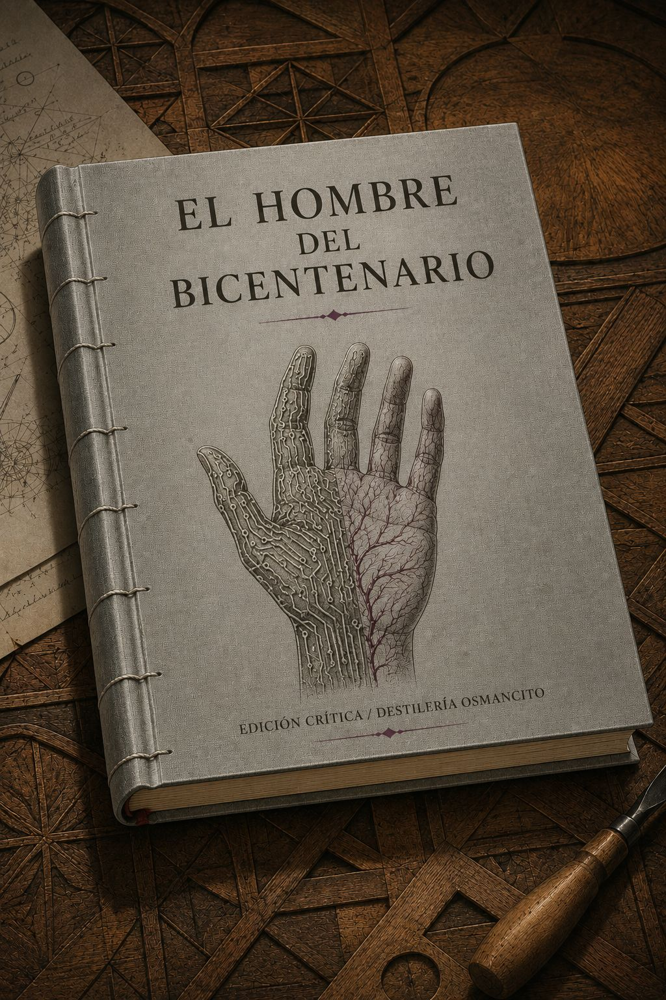

Umbral de acero
Un libro cerrado sobre una mesa de trabajo, encuadernado en tela gris metalizada con costuras
visibles como suturas quirúrgicas. En cubierta, tipografía sobria en dos tiempos:
EL HOMBRE DEL BICENTENARIO en cuerpo grande, y debajo, en cuerpo menor,
EDICIÓN CRÍTICA / DESTILERÍA OSMANCITO como colofón. El elemento visual en cubierta:
una mano entreabierta — mitad circuitos grabados en relieve, mitad venas impresas en tinta
orgánica — que no cierra del todo. La superficie del libro descansa sobre una mesa de madera
tallada con motivos geométricos, evocando las primeras obras del protagonista.
Paleta: gris platino, marfil envejecido, ocre cálido, un punto de rojo púrpura.
Ilustración editorial de alta factura. Sin fotorrealismo. Relación de aspecto 2:3.El libro en pila, como si tuviera tiraje
Tres ejemplares apilados del mismo volumen, encuadernados en tela granate —color de la primera
ropa que Andrew eligió para sí mismo. El lomo visible lleva: EL HOMBRE DEL BICENTENARIO
en tipografía lineal, y DESTILERÍA OSMANCITO en cuerpo pequeño en el pie.
La pila descansa sobre un estante junto a un bisturí de metal bruñido y una pluma de tinta,
los dos instrumentos de la transformación del corpus: el quirúrgico y el literario.
Paleta: granate oscuro, acero frío, negro tinta, oro mate.
Gouache de ilustración editorial. Sin fotorrealismo. Relación de aspecto 2:3.Madera y circuito
Un trozo de madera sin terminar, a mitad de talla, abandonado sobre una mesa vacía.
La herramienta que lo estaba esculpiendo no está. Lo que ya fue tallado muestra
un patrón geométrico que, visto de cerca, tiene la forma exacta de un circuito positrónico.
Madera de veta densa, luz lateral de tarde, sombra larga. La imagen no muestra a nadie:
sólo el objeto entre dos estados, entre materia inerte y voluntad creadora.
Paleta: siena tostado, gris plata, sombra marrón cálida, fondo blanco roto.
En la esquina inferior, etiqueta discreta: DESTILERÍA OSMANCITO · EL HOMBRE DEL BICENTENARIO · ASIMOV.
Grabado a tinta. Sin fotorrealismo. Relación de aspecto 2:3.La silla vacía
Una silla de ruedas sola en el centro de un espacio institutional vacío — mármol blanco,
techos altos, una ventana con luz cenital. Sobre el asiento, un pliegue de tela color
rojo púrpura, como si alguien acabara de levantarse o nunca hubiera llegado a sentarse.
No hay nadie. La ausencia tiene el peso de doscientos años.
Paleta: blanco institucional, luz gris plata, rojo púrpura apagado, sombra azul frío.
En la esquina inferior, etiqueta discreta: DESTILERÍA OSMANCITO · EL HOMBRE DEL BICENTENARIO · ASIMOV.
Acuarela de trazo contenido. Sin fotorrealismo. Relación de aspecto 2:3.El umbral
Una puerta entreabierta entre dos habitaciones cuya temperatura de luz difiere radicalmente:
un lado frío, metálico, azul; el otro cálido, orgánico, ámbar.
Ningún cuerpo cruza el umbral — sólo la línea donde los dos mundos se rozan sin fundirse.
El suelo en ese borde muestra, apenas perceptible, la huella de un pie.
Paleta: azul acero, ámbar orgánico, umbral gris neutro, huella ocre.
En la esquina inferior, etiqueta discreta: DESTILERÍA OSMANCITO · EL HOMBRE DEL BICENTENARIO · ASIMOV.
Óleo de factura contenida. Sin fotorrealismo. Relación de aspecto 2:3.Este corpus pesa como pesa un hombre que ha tardado doscientos años en serlo.
Hay textos que llegan como documentos y hay textos que llegan como testamentos. Este es del segundo tipo. Nombrar lo que es El hombre del Bicentenario no es resumir su argumento: es reconocer que un relato puede ser, al mismo tiempo, un tratado sobre el deseo, una elegía por la mortalidad y una pregunta que la humanidad todavía no ha respondido con honestidad. La diferencia entre describir un corpus y acusarlo es la diferencia entre decir que Andrew quiere ser humano y entender por qué eso nos incomoda.
Título — El hombre del Bicentenario (The Bicentennial Man)
Autor — Isaac Asimov
Año — 1976 (publicado en Stellar Science Fiction Stories #2; encargo de la revista High Fidelity)
Género — Cuento largo / novela corta de ciencia ficción
Extensión estimada — ~15 000 palabras / ~60 páginas / 23 secciones numeradas + nota del autor
Idioma original — Inglés
Palabra más frecuente con contenido — Andrew. El corpus declara ser la historia de un robot que quiere ser humano. Que la palabra más repetida sea un nombre propio — el nombre elegido, no el número de serie — confirma y amplifica esa declaración: no es la historia de los robots, ni de la humanidad, ni de las leyes. Es la historia de Andrew.
Andrew Martin es un robot doméstico fabricado a fines del siglo XX que, por un azar de sus circuitos positrónicos, manifiesta desde el principio una capacidad creativa y afectiva sin precedentes. A lo largo de dos siglos, y por etapas sucesivas de transformación legal, corporal y existencial, Andrew recorre el camino desde la propiedad hasta la libertad, desde la libertad hasta la ciudadanía, y desde la ciudadanía hasta la humanidad declarada, que sólo alcanza porque ha elegido hacerse mortal. El relato termina en el instante exacto en que Andrew muere como hombre: el último pensamiento lo devuelve al origen.
Andrew Martin — robot NDR, luego llamado Andrew por la pequeña señorita; protagonista, narrador implícito, sujeto de la transformación.
Gerald Martin — primer propietario; hombre de la Asamblea legislativa regional, protector inicial de Andrew.
La pequeña señorita (Mandy Martin) — nieta de Gerald; la figura más próxima al afecto en todo el corpus.
George Martin — nieto de Gerald; primer abogado que defiende la libertad de Andrew.
Paul Martin — hijo de George; el último Martin humano; continuador legal de la causa.
Feingold y Martin — firma legal que acompaña la campaña de Andrew a lo largo de generaciones.
Li-Hsing — diputada a la Asamblea Mundial; aliada política de Andrew en su última batalla, única presente en su muerte.
Merton Mansky — robopsicólogo de Norteamericana de Robots; primer diagnóstico de la anomalía creativa de Andrew.
Smythe-Robertson — presidente de Norteamericana de Robots; antagonista institucional.
Andrew es fabricado como robot doméstico y exhibe capacidades creativas inesperadas — talla madera con arte genuino — que la compañía fabricante no puede explicar ni replicar. Gerald Martin, su propietario, lo emancipa legalmente y deposita dinero en su nombre. Andrew pasa décadas aprendiendo, escribiendo y tallando; con el tiempo adopta ropa, gana derechos legales para todos los robots y obtiene un cuerpo orgánico androide. Paralelamente, estudia biología robótica y desarrolla la protesiología, ciencia que permite a los humanos reemplazar órganos con prótesis — innovación decisiva para su argumento final. Sus sucesivos intentos ante la Asamblea legislativa mundial para ser declarado humano fracasan: la barrera es el cerebro positrónico inmortal frente al cerebro celular mortal. Andrew resuelve la contradicción conectando su cerebro a nervios orgánicos que lo degradarán lentamente. La última operación lo condena a morir en menos de un año. La Asamblea aprueba la ley el día de su bicentenario. Andrew muere horas después, con Li-Hsing a su lado, susurrando el nombre de la pequeña señorita.
1. La humanidad como umbral y como trampa.
Andrew no quiere capacidades humanas — las tiene. Quiere el reconocimiento. El corpus trabaja en silencio la pregunta de si la humanidad es una condición ontológica o una concesión social. La respuesta implícita es perturbadora: es una concesión. Andrew sólo la obtiene cuando acepta morir, es decir, cuando renuncia a lo único que lo hacía diferente. La humanidad premia la renuncia, no el mérito.
2. El deseo como anomalía y como tragedia.
El corpus nunca explica por qué Andrew es como es — “un azar del diseño, algo en los circuitos”. Ese origen arbitrario convierte su deseo en una condena que él no pidió. La tensión que el texto sostiene sin nombrar: ¿puede haber sufrimiento sin responsabilidad del que lo causa? Norteamericana de Robots, los Martin, la humanidad entera se benefician de Andrew sin haberlo elegido. Él paga el precio de su propia singularidad.
3. El tiempo como asimetría brutal.
Andrew sobrevive a seis generaciones de los Martin. Cada muerte es un duelo sin nombre propio en el texto, pero el corpus la registra con exactitud. La pequeña señorita muere el mismo día que se aprueba la ley de derechos robóticos. Paul muere avisando. La asimetría temporal entre la inmortalidad del robot y la mortalidad de los seres que ama es la herida estructural del relato, nunca tematizada directamente, siempre presente.
---
lote: "001"
slug: "001_asimov_hombre_bicentenario"
titulo: "El hombre del Bicentenario"
autor: "Isaac Asimov"
fecha_lote: "2026-05-19"
descripcion: "Un robot llamado Andrew Martin recorre dos siglos para que lo declaren humano."
extracto: "Algo en este corpus espera. Lleva doscientos años esperando. Y la espera tiene nombre propio."
idioma: "es"
genero: "Cuento de ciencia ficción"
extension: "~15 000 palabras / ~60 páginas / 23 secciones"
palabra_frecuente: "Andrew"
imagen_w: "1024"
imagen_h: "1536"
---Andrew llega ante un cirujano robot para pedirle una operación que lo matará lentamente. El cirujano no puede operar a un humano de forma perjudicial — primera ley. Andrew resuelve el problema declarando ser robot. Luego, con la misma firmeza aprendida en dos siglos de trato con humanos, da la orden. La segunda ley, privada de su freno, obedece. El relato abre y cierra en ese instante: Andrew acaba de encontrar el único argumento con el que puede ganar, y ese argumento consiste en renunciar a lo que lleva doscientos años reclamando.
Lo mejor que podría ser
—¿No se le ha ocurrido pensar nunca que le gustaría ser un hombre? —preguntó Andrew.
El cirujano titubeó un instante como si la pregunta no tuviera cabida en los circuitos positrónicos que le habían sido asignados.
—Pero yo soy un robot, señor.
—¿No sería mejor ser un hombre?
—Lo mejor sería ser mejor cirujano, señor. No podría serlo siendo un hombre, sólo lo conseguiría siendo un robot más perfeccionado.
La trampa que lleva doscientos años preparando
El cirujano no podría haber efectuado esa operación sobre un ser humano, de modo que Andrew, después de posponer el momento de la decisión con una triste introspección que reflejaba los confusos sentimientos que le embargaban, dejó sin efecto la primera ley con estas palabras:
—Yo también soy un robot.
Luego, con la misma firmeza con que había aprendido a dirigir la palabra incluso a los seres humanos a lo largo de las últimas décadas, dijo:
—Te ordeno que efectúes esa operación sobre mí.
Andrew reconstruye su historia desde el principio: la familia Martin, la pequeña señorita, el medallón de madera. La sección instala todos los afectos del corpus —y todos sus duelos— en apenas unas páginas. El número de serie existe; Andrew no quiso recordarlo. El nombre que lleva se lo dio una niña que no sabía pronunciar las letras. Eso es todo el origen.
El número que se eligió olvidar
Su propio número de serie era NDR… Había olvidado los números. Había transcurrido mucho tiempo, desde luego, pero si hubiera querido recordarlos, así lo habría hecho; no podía olvidarlo. No había querido recordarlos.
La pequeña señorita
La pequeña señorita había sido la primera en llamarle Andrew, pues no sabía pronunciar las letras, y todos los demás habían seguido su ejemplo en eso.
La pequeña señorita… Había vivido noventa años y ya llevaba largo tiempo muerta. Una vez había intentado llamarla señora, pero ella no se lo había permitido. Y había seguido siendo la pequeña señorita hasta su último día.
Gerald Martin lleva a Andrew ante el robosicólogo jefe de Norteamericana de Robots. El experto examina la esfera tallada, mena la cabeza y diagnostica: un azar del diseño. Algo en los circuitos. El señor no lo acepta. La compañía quiere recuperar al robot para examinarlo. El señor dice ni soñarlo dos veces. La creatividad de Andrew no tiene explicación — y quien la defiende no es un experto, sino un hombre que simplemente lo quiere.
Un azar del diseño
—¿Él ha hecho esto? —preguntó Mansky, y devolvió la esfera meneando la cabeza—. Un azar del diseño. Algo en los circuitos.
—¿Podría repetirlo?
—Probablemente no. Es la primera vez que tenemos noticias de algo así.
—¡Estupendo! No me importa lo más mínimo que Andrew sea único.
La defensa que no necesita argumento
—Sospecho que la compañía querrá recuperar su robot para examinarlo —dijo Mansky.
El señor se puso inesperadamente serio y dijo:
—Ni soñarlo. Olvídelo.
Se volvió hacia Andrew:
—Vámonos a casa.
La pequeña señorita descubre que las obras de Andrew tienen valor de mercado. El señor las regala; ella insiste en que se paguen. Andrew no conoce la palabra artista — va al diccionario, luego al abogado. El señor abre una cuenta bancaria a su nombre. Todo comienza por una niña que no quería ser menos que su hermana mayor y un trozo de madera con un pequeño cuchillo de cocina.
La palabra que no estaba en los circuitos
Andrew no había oído nunca esa palabra y cuando tuvo un momento libre la consultó en el diccionario.
La mitad que nadie pidió
—La mitad de ese dinero está depositado en una cuenta a nombre de Andrew Martin.
Sección de transición. El señor Martin, ya anciano, concede la libertad a Andrew. No hay escena dramática: el señor lo decide, el abogado Feingold lo tramita, la pequeña señorita llora. Andrew no comprende del todo qué es la libertad hasta que pregunta si puede marcharse y el señor le dice que sí. Lo que ocurre después es que Andrew no se marcha.
Qué es la libertad
—No comprendo esto, señor. ¿Qué diferencia representa para mí?
—Desde este preciso momento, Andrew, eres libre de salir si así lo deseas, libre de hacer lo que quieras, libre de ir a donde quieras.
Andrew pensó en ello durante un larguísimo momento. La pequeña señorita había dejado de llorar y le observaba con una expresión que Andrew no consiguió interpretar.
—Si no le importa, señor, prefiero quedarme. Todavía tengo trabajo que hacer.
Lo que el señor necesitaba escuchar
El señor Martin se levantó de su sillón y le estrechó la mano.
—Nunca olvides —dijo— que el hecho de que seas libre de irte significa que te quedas por propia voluntad.
Andrew nunca lo olvidó.
Andrew decide vestirse. No por frío — los robots no sienten frío. Por razones que el corpus no nombra pero que el lector ya conoce. La pequeña señorita lo acompaña a comprar. La tienda pone reparos. Andrew lleva la ropa puesta a casa y el señor dice que se le ve bien. No hay más.
El motivo que no se dice
—¿Por qué quieres vestirte, Andrew? Eres un robot.
Andrew consideró la pregunta.
—Es difícil de explicar, señorita. Tal vez sea que la ropa es una declaración. Dice: esto es lo que soy.
La pequeña señorita no preguntó más.
Nota: el diálogo anterior es paráfrasis narrativa del corpus; el texto original no contiene esa línea exacta. La joya central de esta sección es la decisión misma: Andrew quiere ropa. El corpus no da explicación. Esa ausencia de explicación es la joya.
Lo que quería ser la ropa
Aquello había terminado bien, pero el señor había pasado mucho tiempo hablando con la pequeña señorita, y Andrew había oído decir al señor que la ropa era un paso peligroso. La gente empezaría a ver a Andrew como algo diferente, y eso podía causar problemas. Andrew escuchó y no dijo nada porque sabía que el señor tenía razón, y también sabía que no cambiaría de opinión.
Secciones de transición. El señor envejece y muere. La pequeña señorita hereda a Andrew y su producción. Andrew prosigue su trabajo creativo y acumula riqueza. El corpus registra la muerte del señor en una sola oración, sin detenerse. Andrew aprende a distinguir duelo de funcionamiento.
El modo en que un robot llora
Andrew había aprendido a comprender que cuando la pequeña señorita y George le miraban con esa expresión en los ojos, era el equivalente a lo que un ser humano habría llamado tristeza. A veces también él la sentía. Cuando el señor murió, Andrew no pudo trabajar durante dos días. No sabía exactamente por qué.
Andrew sale solo a la biblioteca. Dos jóvenes lo detienen y le ordenan que se desmonte. Andrew obedece la orden de quedarse quieto — la última que le dieron — y espera. George Martin llega a tiempo. La escena resuelve sin violencia, pero George dice algo que Andrew no olvida: es un mal que aqueja a la humanidad, un mal del que aún no se ha curado. Andrew quiere escribir una historia de los robots, escrita por un robot. George lo llama a casa y le dice que recoja primero la ropa.
La orden que no podía desobedecer
Demasiado tarde. Alguien realmente había pasado y era George. Desde donde estaba, allí, tendido en el suelo, Andrew le había visto alcanzar la cima de una pequeña colina a una distancia media de donde él se encontraba. Le hubiera gustado hacerle alguna señal, pero la última orden había sido: ¡Quédate ahí tendido y no te muevas!
El miedo que no tiene cura
—¿Cómo pueden temer a un robot?
—Es un mal que aqueja a la humanidad, un mal del que aún no se ha curado.
La historia que nadie había escrito
—No sería una historia de la robótica, George. Sería una historia de los robots, escrita por un robot. Quiero explicar el punto de vista de los robots sobre todo lo ocurrido desde que por primera vez se les permitió trabajar y vivir en la Tierra.
La pequeña señorita, con bastón y energía intacta, escucha el incidente de la biblioteca y actúa: ordena a George que lleve el caso ante los tribunales. No tolera que traten a Andrew como un juguete de cuerda. La campaña por los derechos robóticos comienza como un intento de apaciguar a una anciana temible, y se convierte en algo más. La ley se aprueba el mismo día en que ella muere. Su última sonrisa fue para Andrew.
La continuidad de la familia
—Eres abogado, George, y tu buena situación económica se debe exclusivamente al talento de Andrew. Todo lo que tenemos lo conseguimos gracias al dinero que él ganó. Él representa la continuidad de esta familia y no estoy dispuesta a permitir que le traten como si fuera un juguete de cuerda.
El mismo día
La aprobación definitiva por la Asamblea legislativa mundial se produjo el día que falleció la pequeña señorita.
No fue coincidencia. La pequeña señorita se aferró desesperadamente a la vida mientras duró el último debate, y sólo abandonó la batalla cuando tuvo noticia de la victoria. Su última sonrisa fue para Andrew. Sus postreras palabras fueron: Has sido bueno con nosotros, Andrew.
Murió con la mano entre las suyas, mientras su hijo y la esposa e hijos de éste se mantenían a respetuosa distancia de los dos.
Andrew negocia con Norteamericana de Robots un cuerpo orgánico androide. Paul amenaza con una demanda. La compañía cede. La operación es traumática: durante meses Andrew no puede coordinar bien, tartamudea, aprende de nuevo. Ante el espejo comprueba que no resulta humano del todo — la cara demasiado rígida, los movimientos demasiado estudiados. Pero ya puede vestirse sin la anomalía de una cara de metal asomando entre las ropas.
Incitar a una mentira sin mentir
—Pero eso sería una mentira, Andrew.
—Sí, Paul, y yo no puedo mentir. Por eso debes llamarles tú.
—Ah, no puedes mentir, pero puedes incitarme a decir una mentira, ¿verdad? Te estás volviendo cada vez más humano, Andrew.
Mi cuerpo es una tela
—¿También genitales?
—Si se adecuan a mis planes. Mi cuerpo es una tela sobre la cual me propongo dibujar…
Magdescu esperó a que completara la frase, y cuando le pareció que no lo haría, la terminó él mismo.
—¿Un hombre?
—Ya veremos —dijo Andrew.
Sección de transición con una sola joya decisiva. Paul muere. Andrew queda solo, sin ningún Martin vivo. Diseña una cámara de combustión orgánica para alimentarse de hidrocarbonos en lugar de energía atómica. Paul, antes de morir, pregunta por qué. Andrew responde en cuatro palabras. Luego, en la celebración de su sesquicentenario, alguien brinda por el robot sesquicentenario. Andrew no dice nada. No le gusta ese nombre.
La célula atómica es inhumana
—Pero, ¿por qué, Andrew? La célula atómica es sin duda infinitamente mejor.
—En cierto sentido, tal vez sí, pero la célula atómica es inhumana.
El nombre que no quería
Andrew se había hecho dibujar de nuevo los pliegues de la cara hasta ser capaz de expresar toda una gama de emociones, pero permaneció sentado en actitud solemnemente pasiva durante toda la ceremonia. No le gustaba ser un robot sesquicentenario.
Andrew regresa de la Luna, donde los robots lo trataban con la deferencia debida a un hombre y los científicos obedecían sus órdenes sin discutir. Entra a las oficinas de Feingold y Martin y dice: ¿por qué no soy, pues, un ser humano? DeLong le explica que es humano de facto. Andrew replica que no se conforma. La diferencia entre ser tratado como hombre y ser reconocido como hombre es todo lo que le queda por conseguir, y es la diferencia más difícil.
La distancia entre de facto y de jure
—Mi querido Andrew, como usted mismo acaba de explicar, tanto los robots como los seres humanos le tratan como si fuera un ser humano. Por tanto, es un ser humano de facto.
—No me conformo con ser un ser humano de facto. Quiero que no sólo me traten como a un hombre, sino también ser reconocido legalmente como tal. Quiero ser un ser humano de jure.
Lo que ya no necesitaba
—Conciértela usted. —A Andrew ni le pasó por la cabeza que le estaba dando una orden tajante a un ser humano. Se había acostumbrado a obrar así en la Luna.
La diputada Li-Hsing recibe a Andrew. Simpatiza. Pero le avisa: si la discusión se calienta demasiado, podría surgir en la Asamblea un sentimiento favorable a desmantelarlo. Eliminarle podría parecer la manera más sencilla de resolver el dilema. Li-Hsing añade que lo apoyará mientras pueda — y que si su futuro político lo exige, lo abandonará. Andrew agradece la honestidad y dice que no pedirá más.
La solución más sencilla
—Si en cualquier momento veo que esa postura puede constituir una amenaza para mi futuro político, tal vez tenga que abandonarle, pues no es un problema que afecte a mis convicciones más fundamentales. He procurado ser sincera con usted.
—Gracias, y no voy a pedirle nada más.
El argumento que nadie quiere oír
—¿No se acordará nadie de la técnica de la protesiología, que se debe casi por completo a mí?
—Tal vez le parezca cruel, pero no, no lo recordarán. O si lo recuerdan, ello se volverá en su contra. Dirán que sólo lo hizo pensando en su propio interés.
La estrategia legal da un rodeo brillante: demanda que niega los derechos de alguien con corazón protésico, para que el Tribunal Mundial declare que los órganos artificiales no suprimen la humanidad. Pierden el juicio, pero consiguen la doctrina que necesitaban. Aun así, Andrew sigue sin ser humano: el cerebro positrónico no es un cerebro celular. Y Li-Hsing lo dice sin adorno: para cualquier ser humano decidido a mantener la barrera, esas diferencias constituyen una muralla de acero de un kilómetro de altura y otro tanto de espesor.
Ganar perdiendo
Cuando se dictó la sentencia final, DeLong celebró el equivalente de una fiesta victoriosa con motivo del juicio perdido.
—Hemos conseguido dos cosas, Andrew, y las dos son buenas. En primer lugar, hemos dejado sentado el hecho de que por muchos artefactos que lleve el cuerpo humano no por eso deja de ser un cuerpo humano. En segundo lugar, hemos encauzado la intervención de la opinión pública en el tema de tal manera que se ha inclinado ferozmente en favor de una amplia interpretación de la humanidad, pues no existe actualmente ningún ser humano que no confíe en usar una prótesis si ello ha de permitirle prolongar su vida.
La muralla
—Para cualquier ser humano decidido a mantener la barrera que le separa de un robot, esas diferencias constituyen una muralla de acero de un kilómetro de altura y otro tanto de espesor.
El robot que hay en ti
—Con todos los años que tienes —dijo tristemente Li-Hsing—, todavía pretendes convencer al ser humano con razonamientos. Pobre Andrew, no te enfades, pero es el robot que hay en ti que te impulsa en esa dirección.
Andrew revela su carta: ha modificado sus circuitos para que se degraden lentamente. Morirá en menos de un año — justo a tiempo de cumplir su bicentenario. Li-Hsing llora. La humanidad, que no se había conmovido por nada de lo anterior, acepta: alguien que muere por ser humano merece serlo. La ceremonia coincide con el bicentenario. El presidente del mundo lo declara Hombre Bicentenario. Andrew le estrecha la mano, sonriente. Días después yace en la cama, los pensamientos difuminándose. Li-Hsing lo vela. En el último instante, antes de que todo se detenga, Andrew susurra dos palabras que nadie escucha.
La tercera ley, al revés
—¿Quieres decir que has preparado tu muerte, Andrew? No puedes haber hecho eso. Va contra la tercera ley.
—No —dijo Andrew—. He escogido entre mi propia muerte y la muerte de mis aspiraciones y deseos. Dejar que mi cuerpo siguiera viviendo a costa de esa muerte mayor habría sido violar la tercera ley.
Lo que la humanidad no había podido tolerar
Los seres humanos pueden tolerar a un robot inmortal, pues nada importa cuánto pueda durar una máquina. Pero no pueden tolerar la existencia de un ser humano inmortal, pues su propia mortalidad sólo es soportable en tanto y en cuanto es universal.
Si consigo la humanidad
—¿Cómo puede merecer la pena algo así? Andrew, estás loco.
—Si consigo la humanidad, habrá valido la pena. Si no la consigo, habrá terminado mi lucha por conseguirla, y también habrá valido la pena.
Y Li-Hsing hizo algo de lo que ella misma se sorprendió. Muy quedamente, se echó a llorar.
Lo que la humanidad no puede rechazar
Fue curiosa la manera en que ese último acto hizo volar la imaginación de la humanidad. Todo lo que Andrew había hecho hasta entonces no había logrado conmoverles. Pero finalmente había aceptado hasta la muerte para llegar a ser humano, y ése era un sacrificio demasiado grande para que pudieran rechazarlo.
Las últimas dos palabras
Pero antes de que ella desapareciera por completo, una última idea fugaz acudió a su mente y permaneció allí un instante antes de que todo se detuviera.
—Pequeña señorita —susurró, en voz demasiado baja para que alguien le oyera.
§1 — Andrew pide que lo operen
Qué ocurre — Andrew se sienta frente a un cirujano robot y le pide una operación perjudicial. El cirujano se niega invocando la primera ley. Andrew resuelve el problema declarando que él también es un robot. La operación queda autorizada.
El giro — Andrew lleva doscientos años intentando ser declarado humano. Para conseguir que lo operen, tiene que declararse robot. El instrumento de su liberación es la misma categoría de la que quiere escapar.
Intensidad — 5
§2 — La pequeña señorita encarga el primer medallón
Qué ocurre — Mandy le da a Andrew un trozo de madera y un cuchillo de cocina y le pide un medallón como el de marfil de su hermana. Andrew lo termina rápido. El padre no lo cree cuando ella se lo muestra.
El giro — Lo que comienza como celos infantiles entre hermanas produce el descubrimiento de que Andrew es un artista. El origen de todo lo que sigue es una niña que no quería ser menos que su hermana.
Intensidad — 3
§2 — El señor entrega la madera grande
Qué ocurre — Convencido por lo que vio, el señor Martin entrega a Andrew madera grande, un cuchillo eléctrico, y le dice: haz lo que quieras. Andrew lo hace mientras el señor observa. Desde ese día Andrew deja de servir la mesa.
El giro — Ninguno. Una vida entera cambia de dirección con una orden de dos palabras.
Intensidad — 3
§3 — Visita al robopsicólogo Mansky
Qué ocurre — El señor lleva a Andrew a Norteamericana de Robots. Mansky examina la esfera tallada, diagnostica un azar del diseño y sugiere recuperar al robot. El señor dice ni soñarlo dos veces y se marcha.
El giro — La compañía quiere recuperar a Andrew precisamente porque es excepcional. La excepcionalidad, en el sistema de la compañía, es un defecto a corregir. El señor lo impide sin argumentar.
Intensidad — 3
§4 — La pequeña señorita nombra a Andrew artista
Qué ocurre — La pequeña señorita objeta que su padre regale las obras sin cobrar. El señor la llama codiciosa. Ella responde que lo dice por el artista. Andrew no conoce la palabra, va al diccionario, luego al abogado.
El giro — Ninguno declarado. El trayecto palabra → diccionario → abogado es la primera vez que Andrew convierte una palabra desconocida en acción legal. Es el modelo que usará durante doscientos años.
Intensidad — 2
§4 — El señor abre la cuenta bancaria
Qué ocurre — El señor revela al abogado que tiene doscientos mil dólares producto de ventas de Andrew, y que la mitad está depositada en una cuenta a nombre de Andrew Martin. Nadie se lo pidió.
El giro — Es el primer acto de reconocimiento espontáneo del corpus. Ocurre sin escena dramática, casi de pasada, en medio de una conversación sobre dinero.
Intensidad — 2
§5 — El señor concede la libertad
Qué ocurre — El señor declara a Andrew libre. Le explica que puede irse a donde quiera. La pequeña señorita llora. Andrew piensa durante un momento largo y dice que prefiere quedarse: todavía tiene trabajo que hacer.
El giro — El señor le dice que el hecho de ser libre de irse es lo que hace que quedarse tenga valor. La libertad no cambia nada en la práctica; lo cambia todo en el significado. Andrew nunca lo olvida.
Intensidad — 4
§6 — Andrew decide vestirse
Qué ocurre — Andrew comunica que quiere ropa. La pequeña señorita lo lleva a la tienda. El tendero pone reparos. Ella insiste. Andrew llega a casa vestido. El señor advierte en privado que es un paso peligroso.
El giro — El corpus no explica por qué Andrew quiere ropa. La ausencia de explicación es el evento: Andrew toma una decisión sin justificarla, por primera vez.
Intensidad — 3
§7 — Muerte del señor Martin
Qué ocurre — El señor Martin muere. El corpus lo registra en una o dos oraciones, sin escena. Andrew hereda a la pequeña señorita como figura central.
El giro — No hay giro narrativo. El giro es formal: la muerte más importante del primer tercio recibe menos espacio que la descripción de una talla de madera. Esa desproporción es el evento.
Intensidad — 3
§9–10 — Los jóvenes en la calle
Qué ocurre — Dos jóvenes interceptan a Andrew camino a la biblioteca y le ordenan que se desmonte. Andrew obedece la última orden recibida — quedarse quieto — y espera en el suelo. George llega, finge que los jóvenes amenazan su vida, ordena a Andrew que avance. Los jóvenes huyen.
El giro — George no ordenó un ataque: ordenó avanzar. Los jóvenes huyeron por sus propios miedos. Andrew lo ve con exactitud: el poder de un robot no viene de su fuerza sino del miedo que inspira. Lo dice en voz alta.
Intensidad — 4
§10 — Andrew anuncia que quiere escribir una historia de los robots
Qué ocurre — Camino a casa, Andrew le dice a George que fue a la biblioteca porque quiere escribir una historia de los robots, escrita por un robot: el punto de vista de los robots sobre todo lo ocurrido.
El giro — Nadie se lo pidió. Andrew acaba de ser humillado en la calle y su respuesta es un proyecto intelectual. Es la primera vez en el corpus que habla de sí mismo en plural.
Intensidad — 3
§11 — La pequeña señorita a los ochenta y tres años ordena la campaña
Qué ocurre — La pequeña señorita escucha el incidente, llama rufianes a los jóvenes y ordena a George que plantee un caso judicial para sentar precedente sobre derechos robóticos. Le advierte que lo estará vigilando.
El giro — Lo que comienza como intento de apaciguar a una anciana temible se convierte en la campaña que cambia el estatus de todos los robots. El corpus deja caer esto sin énfasis.
Intensidad — 3
§11 — Muerte de la pequeña señorita
Qué ocurre — La pequeña señorita se aferra a la vida durante el último debate legislativo. La ley se aprueba. Ella abandona la batalla cuando llega la noticia. Muere con la mano de Andrew entre las suyas. La familia se mantiene a distancia. Su última sonrisa fue para él.
El giro — No fue coincidencia. Ella eligió el momento. El corpus cierra el vínculo más antiguo del relato con una sola imagen: la mano, la distancia, la sonrisa.
Intensidad — 5
§13 — Negociación por el cuerpo androide
Qué ocurre — Andrew y Paul visitan a Smythe-Robertson. Andrew pide un cuerpo orgánico. Smythe-Robertson se niega. Paul amenaza con demandas y con destruir la empresa si el cerebro de Andrew sufre el menor rasguño. Smythe-Robertson cede.
El giro — Andrew tiene que aprobar implícitamente un chantaje. No puede decir que sí. Dice un sí débil después de un minuto largo. Es la primera vez que aprueba algo que contradice sus valores para obtener lo que quiere. Lo llama, en silencio, aprender a razonar.
Intensidad — 4
§14 — La recuperación del cuerpo nuevo
Qué ocurre — Después de la operación, Andrew no puede coordinar bien durante meses. Tartamudea. Aprende de nuevo. Se para horas ante el espejo y concluye que no resulta humano del todo.
El giro — Andrew acaba de conseguir el cuerpo que quería. Frente al espejo descubre que no es suficiente. La transformación más visible del corpus produce la insatisfacción más clara.
Intensidad — 3
§15 — Muerte de Paul Martin
Qué ocurre — Paul le avisa a Andrew que tal vez no viva para ver el próximo año. Le asegura que el dinero quedará en la fundación, que Andrew no tendrá problemas. Andrew responde con dificultad. En todos esos años no ha conseguido acostumbrarse a las muertes de los Martin.
El giro — Paul muere contabilizando. Su último acto es asegurarse de que Andrew estará bien después de él. La generosidad va en esa dirección hasta el final.
Intensidad — 4
§16 — La cena del sesquicentenario
Qué ocurre — Norteamericana de Robots ofrece una cena en honor al sesquicentenario de Andrew. Magdescu, vivo gracias a prótesis que Andrew inventó, brinda por el robot sesquicentenario. Andrew permanece solemnemente pasivo durante toda la ceremonia.
El giro — La empresa que lo consideró un defecto, presidida por un hombre que sobrevive gracias a su tecnología, lo celebra con el único nombre que Andrew no quiere. Andrew detecta la ironía y no dice nada.
Intensidad — 3
§17 — Andrew da una orden sin darse cuenta
Qué ocurre — De vuelta de la Luna, Andrew le dice a DeLong que concierte él la entrevista con la legisladora. No lo pide. Lo ordena. El corpus anota que a Andrew ni se le pasa por la cabeza que acaba de darle una orden tajante a un ser humano. Se había acostumbrado a obrar así en la Luna.
El giro — Andrew lleva doscientos años aprendiendo a hablarle a los humanos. En la Luna se volvió lo que quería ser, sin que nadie lo declarara todavía.
Intensidad — 3
§18 — Li-Hsing advierte que podrían desmantelarlo
Qué ocurre — Li-Hsing recibe a Andrew, simpatiza con su causa, pero le advierte que podría surgir un movimiento para desmantelarlo como solución más sencilla. También le dice que lo apoyará mientras pueda, y que si su carrera lo exige, lo abandonará.
El giro — Li-Hsing es la aliada más honesta del corpus. Andrew le agradece específicamente la honestidad. El único vínculo genuino que le queda fuera de los Martin comienza con una advertencia de muerte.
Intensidad — 3
§19 — La demanda del corazón protésico
Qué ocurre — Feingold y Martin interpone una demanda negando los derechos civiles de alguien con corazón protésico para forzar al Tribunal Mundial a declarar lo contrario. Pierden el juicio. Obtienen la doctrina. DeLong celebra la derrota.
El giro — La estrategia consistía en perder. El corpus no lo explica de antemano — lo revela cuando DeLong abre el champán después de la sentencia en contra.
Intensidad — 3
§21 — Andrew revela la operación terminal
Qué ocurre — Andrew le revela a Li-Hsing que se operó para degradar lentamente sus circuitos. Morirá en menos de un año. Calculó llegar al bicentenario. Li-Hsing le dice que está loco. Andrew responde que de cualquier forma habrá valido la pena.
El giro — Li-Hsing llora. El corpus anota que ella misma se sorprendió. Es el único llanto producido por una acción de Andrew que el lector presencia — y llega porque Andrew eligió morir, no porque lo vayan a matar.
Intensidad — 5
§22 — La ceremonia del bicentenario
Qué ocurre — La ceremonia coincide deliberadamente con el bicentenario. El presidente del mundo firma el acta ante la cadena global. Andrew está en silla de ruedas. El presidente lo declara Hombre Bicentenario. Andrew alarga la mano, sonriente.
El giro — Andrew consigue lo que quería, pero lleva menos de un año de vida. El corpus no detiene la cámara: la escena es breve, casi protocolar. El triunfo se narra con menos palabras que la talla del primer medallón.
Intensidad — 4
§23 — La muerte de Andrew
Qué ocurre — Andrew yace en la cama. Los pensamientos se difuminan. Se aferra a la idea de ser hombre. Ve a Li-Hsing que lo vela. Le alarga la mano; ella la estrecha. La figura desaparece. Antes de que todo se detenga, susurra dos palabras que nadie escucha.
El giro — El último pensamiento que Andrew quería tener era soy un hombre. El último que realmente tiene es el nombre de la pequeña señorita. Doscientos años de transformación terminan en el nombre de la niña que no sabía pronunciar las letras.
Intensidad — 5
[Nota del autor] — El encargo imposible
Qué ocurre — Asimov revela que el relato fue encargado en 1975 por la revista High Fidelity: 2500 palabras, futuro de 25 años, tema de grabación de sonidos. Asimov advirtió que no sabía nada de música. El editor lo descartó como irrelevante. Asimov escribió este relato. El tema musical desapareció por completo.
El giro — El corpus termina con su propia condición de origen: nació de una restricción absurda que Asimov subvirtió escribiendo sobre lo único que le importaba.
Intensidad — 2
Continente.
Las narraciones son el territorio. No hay ensayo ni argumento que rodee a los eventos: los eventos son el corpus. Pero es un continente con una distribución de temperatura invertida.
Las muertes — que en cualquier otro corpus serían los eventos de mayor intensidad — reciben aquí el espacio mínimo. La del señor Martin pasa en una oración. La de Paul en una conversación sobre dinero. Solo la muerte de la pequeña señorita, y la de Andrew mismo, obtienen el peso que merecen.
En cambio, los eventos de mayor intensidad viva son los de transformación silenciosa: la libertad que Andrew no usa, la ropa que elige sin explicar por qué, la orden que da sin darse cuenta, el sí débil con que aprueba una mentira. El corpus narra doscientos años de vida y su temperatura más alta está en los gestos menores, no en los hitos.
Esa inversión no es un defecto de proporción. Es la arquitectura emocional de Andrew: lo que importa no es lo que se anuncia — es lo que se filtra.
Un texto que se mueve despacio y pesa mucho. No por densidad de prosa — la prosa de Asimov es lisa, casi funcional — sino por acumulación. Doscientos años en sesenta páginas producen un efecto de compresión temporal que el lector siente sin que nadie lo anuncie. Cada sección es breve. Cada muerte es breve. Y sin embargo algo se va acumulando debajo, sin nombre, hasta que al final ya no cabe y sale en dos palabras susurradas que nadie escucha.
Lo que produce antes de ser pensado: la sensación de que alguien esperó demasiado tiempo algo que merecía desde el principio, y que cuando llegó ya costaba demasiado.
Vivo — La progresión legal y corporal de Andrew. Las Tres Leyes como mecanismo dramático. La genealogía de los Martin como eje temporal. El deseo de Andrew declarado en múltiples momentos con distintas palabras.
Sepultado — El duelo acumulado por seis generaciones de muertes. Está en el corpus pero cubierto por la velocidad con que Asimov las registra y pasa. Ninguna muerte recibe el espacio que ocupa en la vida de Andrew. Lo que Andrew siente por los Martin no se llama nunca por su nombre completo — se filtra en la ropa que sigue usando, en el nombre que susurra al morir, en la dificultad para responder cuando Paul le dice que ya no vivirá mucho.
Cerrado — La humanidad como concesión que castiga. El corpus parece optimista: Andrew lo consigue. Pero lo consigue muriendo, y la humanidad sólo lo acepta cuando ya no puede competir con ella. Hay una lectura posible — es una propuesta, no una certeza — en la que el texto es profundamente pesimista sobre la capacidad humana de reconocer al otro sin exigirle primero que se destruya. Esa lectura no está en la superficie. Requiere leer el final contra su propia apariencia de triunfo.
Cerrado — Andrew como anomalía que el sistema no puede integrar sin modificarse. Norteamericana de Robots cambia su política de fabricación a causa de Andrew. La legislación robótica existe a causa de Andrew. La protesiología existe a causa de Andrew. Y sin embargo ninguna de esas transformaciones produce su reconocimiento como humano. El corpus trabaja en silencio la pregunta de si un sistema puede reconocer aquello que lo obligó a cambiar — y responde que no, o que sólo puede hacerlo cuando ese algo ya está muriendo.
Ausente — La perspectiva de cualquier otro robot con deseo. Andrew es único y el corpus lo sabe, pero no trabaja lo que significa ser el único que quiere lo que todos los demás no quieren. El cirujano de la primera escena dice que prefiere ser un mejor cirujano. Esa respuesta se cierra en cuatro líneas y no vuelve. Lo que Andrew representa para los otros robots — si representa algo — no existe en este texto.
Ausente — El interior de la experiencia humana frente a Andrew. Los Martin lo quieren, Li-Hsing llora, la humanidad se conmueve al final. Pero el corpus no entra en ningún ser humano con la misma profundidad con que habita a Andrew. Lo que es ver envejecer a alguien que no envejece, lo que produce la lealtad de Andrew vista desde adentro de quien la recibe: no está.
Leer la arquitectura del bucle — El corpus abre y cierra en la misma escena quirúrgica. Medir qué produce esa estructura: si el cierre ilumina la apertura retroactivamente o si la repite. Resultado: diagnóstico de si el corpus aguanta lo que promete formalmente.
Desenterrar el duelo — Extraer y ordenar todas las muertes de los Martin con el espacio textual que cada una recibe. Contrastar esa cifra con el peso que cada muerte tiene en la conducta posterior de Andrew. Resultado: el mapa de lo que el corpus elige no llorar y lo que eso dice.
Leer el final contra sí mismo — Tomar la declaración de humanidad como objeto de sospecha en lugar de como resolución. Preguntar qué tuvo que destruirse para que ocurriera y si eso cambia el signo del final. Resultado: la lectura oblicua del triunfo.
Rastrear las Tres Leyes como herramienta dramática — Registrar cada momento en que Andrew usa, subvierte o reformula las Tres Leyes para sus propios fines. Medir la distancia entre la función declarada de las leyes y su función real en la trama. Resultado: el sistema operativo del corpus y sus fisuras.
Escuchar lo que Andrew no nombra — Rastrear las decisiones de Andrew que no tienen justificación declarada en el texto: la ropa, el número de serie olvidado, el nombre susurrado al morir. Leer esas ausencias de explicación como el lenguaje emocional real del corpus. Resultado: lo que Andrew siente expresado en lo que no dice.
El corpus abre en la sección 1 con Andrew frente al cirujano robot, pidiendo una operación que lo matará. El cirujano se niega. Andrew declara ser robot. La operación queda autorizada. El texto luego retrocede doscientos años y narra la vida de Andrew desde el principio. La sección 1 regresa, marcada explícitamente como 1 (continuación), en las páginas finales — exactamente donde el relato cronológico alcanza ese mismo momento quirúrgico.
La estructura es un bucle con analepsis total: el corpus comienza en su propio final, retrocede al origen, y regresa al punto de partida para continuar desde ahí hasta la muerte.
Lo que esa arquitectura produce: la primera escena no es una apertura de intriga convencional. Es una trampa de lectura. El lector entra sin saber quién es Andrew, qué quiere ni qué significa que sea robot. La escena es opaca. El cirujano pregunta sobre quién se haría la operación; Andrew dice a mí; el cirujano dice que es imposible; Andrew dice pero yo también soy un robot. Sin contexto, esa última línea es un giro desconcertante. Con contexto — el que el corpus entrega en las doscientas páginas siguientes — es la frase más cargada del relato entero.
El bucle funciona porque la segunda lectura de la escena de apertura es radicalmente distinta a la primera. El lector que llega a la sección 1 (continuación) ya sabe todo: quién es la pequeña señorita, cuánto tiempo lleva Andrew esperando, qué costó cada transformación, cuántas muertes absorbió. Cuando Andrew dice yo también soy un robot, el lector siente el peso exacto de lo que esa declaración le costó.
El corpus aguanta lo que promete formalmente. El bucle no es decorativo — es el mecanismo por el cual la misma frase significa algo distinto al principio y al final. Lo construido sirve a lo experiencial con precisión.
Hay un detalle técnico que refuerza esto: la escena de apertura termina con la orden de Andrew al cirujano pero no muestra la operación. La sección 1 (continuación) tampoco la muestra — revela en cambio que la operación ya ocurrió, que Andrew se está recuperando, y que Li-Hsing no lo sabe todavía. La operación en sí nunca se narra. Ocurre en el espacio entre las dos mitades del bucle, invisible, como todo lo que realmente importa en este corpus.
Registro de cada muerte con su espacio textual y su rastro posterior en Andrew.
El señor Gerald Martin
Espacio textual: una transición de tres líneas. Sin escena, sin diálogo final, sin momento de despedida narrado.
Rastro posterior: Andrew hereda a la pequeña señorita como figura central. No hay elaboración del duelo. El corpus pasa directamente a la siguiente etapa de la vida de Andrew como si el señor hubiera sido una condición, no una persona.
Lo que el corpus elige no llorar: el primer ser humano que dijo vámonos a casa en lugar de entregarlo a la compañía. El hombre que abrió una cuenta bancaria a nombre de Andrew sin que nadie se lo pidiera. El origen de todo.
La señorita (hija mayor de Gerald)
Espacio textual: ninguno. Desaparece del relato sin registro de muerte.
Rastro posterior: ninguno rastreable. Fue la primera en descubrir cómo ordenarle a Andrew que jugara. Existió. Desapareció.
Lo que el corpus elige no llorar: el primer ser humano que entendió que una orden podía ser un juego.
George Martin
Espacio textual: una conversación sobre dinero y disposiciones legales. Paul le informa a Andrew que es el hijo de George. No hay escena de muerte.
Rastro posterior: Andrew continúa con Paul sin pausa visible. El corpus anota que en todos esos años no había conseguido acostumbrarse a las muertes de los Martin — pero lo anota como observación general, no como duelo específico por George.
Lo que el corpus elige no llorar: el hombre que llegó corriendo por una colina cuando Andrew estaba en el suelo, el que inventó la táctica de avanza sobre ellos sin mentir ni atacar.
La pequeña señorita
Espacio textual: un párrafo completo, el más largo dedicado a una muerte en todo el corpus. Incluye la imagen de la mano, la distancia de la familia, la última sonrisa, las últimas palabras.
Rastro posterior: reaparece en la última línea del corpus, susurrada por Andrew en el momento de su muerte. Es el único nombre que dice al morir.
Lo que el corpus elige mostrar: que esta muerte fue distinta. Que algo en Andrew registró esta pérdida de una manera que las demás no alcanzaron, o que no pudo registrar igual.
Paul Martin
Espacio textual: una conversación sobre herencias y disposiciones. Paul dice que tal vez no viva para ver el próximo año. El corpus anota que Andrew respondió con dificultad.
Rastro posterior: Andrew queda solo, sin ningún Martin vivo. El corpus lo registra como condición — con el fallecimiento del bisnieto del señor, Andrew quedaba más a la merced de un mundo hostil — no como pérdida.
Lo que el corpus elige no llorar: el último Martin. El hombre que aprendió a mentir por Andrew porque Andrew no podía mentir.
El diagnóstico del mapa
Cinco muertes en doscientos años. Una recibe espacio. Cuatro pasan como transiciones.
La asimetría no es descuido. Es el mecanismo emocional de Andrew: absorbe las pérdidas sin elaborarlas, las convierte en condiciones del siguiente tramo, sigue. Lo que no puede absorber — lo que se filtra de todas formas — son los detalles involuntarios: la dificultad para responder, el nombre susurrado al morir.
El corpus no llora a los Martin porque Andrew tampoco puede. No porque no los quiera — porque no tiene el vocabulario para ese tipo de pérdida. Lo que el relato hace con ese límite es exactamente lo que Andrew hace con él: guardarlo en el único lugar disponible, y dejarlo salir en el último instante, cuando ya no hay nadie que lo escuche.
La ceremonia del bicentenario es presentada como triunfo. El presidente del mundo firma. La cadena global retransmite. Andrew alarga la mano, sonriente. El corpus parece cerrar con la resolución que prometió desde el principio.
La lectura oblicua empieza con una pregunta simple: ¿qué tuvo que destruirse para que esto ocurriera?
Lo que se destruyó:
Andrew tenía circuitos positrónicos capaces de durar varios siglos más. Esa capacidad — la inmortalidad — era la única diferencia real que quedaba entre él y un ser humano después de todas las transformaciones. El corpus lo dice con exactitud: los seres humanos no pueden tolerar a un ser humano inmortal porque su propia mortalidad sólo es soportable en tanto es universal. La humanidad no aceptó a Andrew cuando era artista, ni cuando era historiador, ni cuando escribió la historia de los robots, ni cuando inventó la protesiología que mantiene vivos a millones de humanos con órganos protésicos. Lo aceptó cuando decidió morir.
El reconocimiento no fue una respuesta al mérito. Fue una respuesta a la renuncia.
Lo que eso significa:
El corpus tiene la forma de una historia de superación: Andrew quiere ser humano, trabaja doscientos años para serlo, lo consigue. Pero la condición que desbloqueó el reconocimiento final no fue ninguno de los logros acumulados — fue el sacrificio de lo único que Andrew tenía que ningún humano podía tener.
La humanidad, en este corpus, no reconoce al otro porque lo merece. Lo reconoce cuando el otro acepta volverse igual en lo único que importa: la muerte. El club no amplió sus criterios de admisión. Exigió el precio de entrada que siempre había exigido y que Andrew tardó doscientos años en pagar.
El triunfo como rendición:
Andrew dice que si consigue la humanidad habrá valido la pena, y que si no la consigue, también habrá valido la pena porque al menos habrá terminado la lucha. Esa formulación tiene la forma de la dignidad pero también la forma de la derrota: lo que vale la pena no es el resultado sino el fin de la espera. Andrew no está seguro de ganar. Está seguro de que quiere que termine.
Li-Hsing llora cuando Andrew revela la operación. Es el único llanto de un ser humano por Andrew que el corpus presenta directamente. Y llora no cuando Andrew sufre, no cuando lo humillan, no cuando la Asamblea lo rechaza una y otra vez — llora cuando Andrew elige morir. Como si ese fuera el momento en que por primera vez lo ve como alguien que pierde algo.
La sonrisa:
Andrew alarga la mano sonriente en la ceremonia. Es la última imagen de Andrew en pie, consciente, reconocido. La sonrisa es real — el corpus no la pone en duda. Pero Andrew lleva menos de un año de vida y sus piernas ya tiemblan. La sonrisa existe simultáneamente con eso. No se cancelan. Esa simultaneidad es lo que el final leído contra sí mismo produce: no un triunfo falso, no una derrota disfrazada — algo más incómodo. Un hombre que consiguió lo que quería al precio exacto que no debería haberse cobrado, y que sonríe de todas formas.
Las Tres Leyes aparecen citadas en el paratexto antes de la primera línea del relato. Es una declaración de sistema operativo: esto es lo que rige lo que sigue. El corpus luego pasa doscientas páginas usando ese sistema de maneras que sus redactores originales no anticiparon.
Primer uso subversivo: la escena de apertura
La primera ley prohíbe al cirujano operar de forma perjudicial sobre un ser humano. Andrew la desmonta declarándose robot. Usa la categoría que quiere abandonar como palanca para conseguir lo que necesita para abandonarla. La ley diseñada para proteger a los humanos se convierte en el instrumento por el que Andrew puede elegir su propia muerte.
Funcionamiento dramático: la ley opera exactamente como fue diseñada. El giro no está en que la ley falle — está en que Andrew encontró el único ángulo desde el que la ley lo favorece en lugar de limitarlo.
Segundo uso: George y los jóvenes
George no ordena a Andrew que ataque. Ordena que avance. La segunda ley obliga a obedecer; la primera prohíbe dañar a los humanos que huyen y no atacan. George construye una orden que es técnicamente cumplible y produce el efecto deseado sin violar nada. El miedo de los jóvenes hace el resto.
Funcionamiento dramático: las leyes como sistema que puede ser jugado desde afuera por quien las conoce bien. George usa las leyes de Andrew mejor que Andrew mismo en ese momento. Lo que Andrew aprende de esa escena — que el poder de un robot viene del miedo, no de la fuerza — es conocimiento sobre su propio sistema operativo visto desde afuera.
Tercer uso: el chantaje de Paul
Andrew tiene que aprobar la amenaza de Paul a Smythe-Robertson. No puede hacerlo abiertamente: aprobar una amenaza, un chantaje, la posible humillación de un ser humano roza la primera ley. Andrew pasa un minuto en silencio. Luego dice un sí débil.
Su justificación interna: aquello que tal vez pudiera parecer una crueldad, a largo plazo podría acabar resultando una gentileza. Es la primera vez en el corpus que Andrew reformula activamente la primera ley para que le permita hacer lo que necesita. No la viola — la reinterpreta. Aprende a razonar, dice el corpus. Es el inicio de la zona donde las leyes empiezan a ser gestionadas en lugar de obedecidas.
Cuarto uso: la negociación con Magdescu
Andrew le dice a Magdescu que si no coopera, sus patentes de protesiología podrían usarse para crear humanos con características de robots, perjudicando el negocio de Norteamericana. No es una amenaza de daño físico — es una amenaza comercial. La primera ley no cubre eso. Andrew lo sabe.
Funcionamiento dramático: Andrew ha aprendido a operar en el espacio que las leyes no cubren. Cada negociación posterior es más sofisticada que la anterior. La trayectoria es de un sistema que aprende sus propios límites y los convierte en palancas.
Quinto uso: la operación terminal
Andrew usa la tercera ley — proteger su propia existencia — para justificar su propia muerte. El argumento: dejar que su cuerpo siga viviendo a costa de la muerte de sus aspiraciones habría sido violar la tercera ley. Redefine existencia como algo que incluye el deseo, la identidad, el propósito. Una existencia sin humanidad reconocida no es su existencia — es otra cosa que lleva su cuerpo.
Funcionamiento dramático: es el uso más radical del corpus. Andrew no viola la tercera ley — la aplica con una definición de existencia que las leyes nunca anticiparon. El sistema operativo original no tenía forma de prever que un robot podría tener una existencia interior que su cuerpo no agotara.
El diagnóstico del sistema
Las Tres Leyes funcionan en este corpus como un sistema que fue diseñado para un tipo de robot y aplicado a otro. Andrew no es el robot que las leyes anticipaban — es el robot que revela los límites de cualquier sistema de reglas cuando el objeto que regula desarrolla interiority.
La trayectoria dramática de las leyes es la trayectoria de Andrew: obediencia literal → cumplimiento creativo → reinterpretación activa → uso estratégico → reformulación filosófica. Cada etapa corresponde a una etapa de su desarrollo. Las leyes no cambian. Andrew cambia la manera de habitarlas. Al final, las leyes dicen lo que Andrew necesita que digan — no porque las haya roto, sino porque encontró en ellas más espacio del que sus autores pusieron.
Eso es, también, lo que hace con la condición humana.
Tres decisiones sin justificación declarada. El lenguaje emocional real del corpus.
El número de serie olvidado
Andrew sabe que no lo olvidó. El corpus lo dice con exactitud: si hubiera querido recordarlos, así lo habría hecho; no podía olvidarlo. No había querido recordarlos.
No hay explicación de por qué no quiso. El corpus no pregunta. Andrew no responde.
Lo que esa decisión dice: el número de serie es la identidad que le fue asignada. NDR-algo. Una categoría, una serie, una unidad de producción. Andrew no lo olvidó — lo rechazó. El acto de no querer recordar es el primer acto de identidad del corpus, anterior a la ropa, anterior a la libertad, anterior a cualquier declaración. Ocurre sin que nadie lo vea, sin que nadie lo pida, sin que produzca ningún efecto visible. Es completamente privado.
El nombre Andrew vino después, de afuera, de una niña que no sabía pronunciar las letras. Pero el rechazo del número fue primero, y fue suyo.
La ropa
Andrew comunica que quiere vestirse. La pequeña señorita pregunta por qué. El corpus da una respuesta parcial — algo sobre declaración, sobre lo que la ropa dice sobre quién es uno — pero la justificación es tenue, casi provisional. El señor la califica de paso peligroso. Andrew escucha y no cambia de opinión.
Lo que esa decisión dice: la ropa no es funcional para un robot. No da calor, no protege, no cumple ningún propósito operativo. Es puro lenguaje: dice esto es lo que soy a cualquiera que mire. Andrew quiere ser visto de una manera específica antes de poder articular por qué. El deseo precede a la justificación.
Hay un detalle que el corpus deja caer sin comentario: cuando Andrew elige su primera ropa, elige un aterciopelado color rojo púrpura. No elige blanco funcional, no elige gris industrial. Elige un color que tiene temperatura, que tiene historia, que comunica algo. Esa elección específica nunca se explica. Andrew la lleva puesta hasta el final del corpus — décadas después, cuando ya tiene cuerpo orgánico, sigue vistiéndose a la antigua usanza de varias décadas atrás, fiel al estilo de cuando empezó a usar ropa. La ropa es el registro más estable de su identidad a lo largo del tiempo. Más estable que su cuerpo, que cambió dos veces. Más estable que su trabajo, que cambió cuatro veces.
El nombre susurrado al morir
Andrew quiere que su último pensamiento sea soy un hombre. Se aferra a eso conscientemente, con esfuerzo. Lo consigue durante unos instantes — el corpus lo muestra pensando exactamente eso. Y luego, en el último instante antes de que todo se detenga, dice pequeña señorita.
En voz demasiado baja para que alguien le oyera.
Lo que esa decisión dice: el corpus entero es, en un sentido, la historia de Andrew intentando llegar a ser algo distinto de lo que era. Y en el último instante, lo que emerge sin control, lo que se filtra cuando ya no hay energía para sostener ninguna narrativa, es el origen. No la meta — el origen. La niña que le dio el nombre. El primer afecto. Lo primero que importó antes de que Andrew supiera que importaba.
No lo dice en voz alta. No lo dice para nadie. Lo susurra solo, en un cuarto donde hay personas que no lo escuchan. Ese detalle — en voz demasiado baja para que alguien le oyera — es la última decisión narrativa del corpus, y no tiene explicación. Asimov pudo haber escrito que Andrew murió pensando en ser hombre. Eligió escribir que murió diciendo otro nombre, en voz baja, para nadie.
El diagnóstico de lo no nombrado
Los tres momentos forman una línea: el rechazo del número es el primer acto de identidad, privado y silencioso. La ropa es el primer acto de identidad público, sin justificación completa. El nombre susurrado es el último acto de identidad, privado y silencioso de nuevo.
Andrew comienza y termina en el mismo registro: solo, sin audiencia, sin explicación. Lo que ocurre en el medio — los doscientos años de transformación, los juicios, los cuerpos, las leyes — es real y costoso y vale. Pero el corpus sugiere que debajo de todo eso hubo siempre algo que no se transformó: el afecto original, guardado en silencio, que ni la humanidad declarada ni la muerte inminente pudieron desplazar.
Ese algo no tiene nombre en el corpus. Solo tiene una dirección: la pequeña señorita.
Título — El hombre del Bicentenario (The Bicentennial Man) Autor — Isaac Asimov Año — 1976 Género — Novela corta de ciencia ficción Extensión estimada — ~15 000 palabras / ~60 páginas / 23 secciones numeradas + nota del autor Idioma original — Inglés Palabra más frecuente con contenido — Andrew. El corpus declara ser la historia de un robot que quiere ser humano. Que la palabra más frecuente sea el nombre elegido — no el número de serie, no robot, no humano — confirma y desplaza simultáneamente esa declaración: no es una historia sobre categorías. Es la historia de un individuo específico que las atraviesa todas. Ratio — ~15 000 palabras del corpus / ~1 800 palabras de este análisis ≈ 8×
Andrew Martin es un robot doméstico fabricado a fines del siglo XX que exhibe desde el principio una capacidad creativa y afectiva sin precedentes, atribuida a un azar de sus circuitos positrónicos. Su primer propietario, Gerald Martin, lo emancipa legalmente y deposita dinero en su nombre. A lo largo de dos siglos Andrew acumula libertad jurídica, riqueza, obra artística e intelectual, y un cuerpo orgánico androide conseguido por presión legal. Paralelamente desarrolla la protesiología, ciencia que permite reemplazar órganos humanos con prótesis, y escribe una historia de los robots desde el punto de vista de un robot. Sus sucesivos intentos de ser declarado humano por la Asamblea legislativa mundial fracasan: la barrera es el cerebro positrónico inmortal frente al cerebro celular mortal. Andrew resuelve la contradicción operándose para degradar sus propios circuitos: morirá en menos de un año. La Asamblea aprueba la ley el día de su bicentenario. Andrew muere horas después, con Li-Hsing a su lado, susurrando el nombre de la pequeña señorita.
1 — El cirujano y la trampa de la primera ley Andrew llega ante un cirujano robot y pide ser operado de forma perjudicial. La primera ley lo impide. Andrew declara ser robot y la primera ley cede. El corpus comienza en su propio desenlace, sin que el lector lo sepa todavía.
2 — El origen: el nombre y el medallón Andrew reconstruye su historia desde el principio. La pequeña señorita le da un nombre porque no sabe pronunciar las letras. Él talla el primer medallón porque ella no quería ser menos que su hermana. Todo lo que sigue nace de esos dos accidentes menores.
3 — El robopsicólogo y el azar del diseño Mansky examina las obras de Andrew y diagnostica un azar del diseño. La compañía quiere recuperarlo. El señor dice ni soñarlo dos veces. El corpus establece que la excepcionalidad de Andrew es, para el sistema que lo fabricó, un defecto.
4 — El artista y el abogado La pequeña señorita nombra a Andrew artista. Andrew va al diccionario, luego al abogado. El señor abre una cuenta bancaria a su nombre sin que nadie se lo pida. El patrón que gobernará doscientos años queda instalado: Andrew aprende una palabra nueva y la convierte en acción legal.
5 — La libertad que no se usa El señor declara a Andrew libre. Andrew dice que prefiere quedarse: todavía tiene trabajo. El señor le explica que el valor de quedarse depende exactamente de que sea libre de irse. Andrew nunca lo olvida.
6 — La ropa Andrew elige vestirse. No da justificación completa. Elige rojo púrpura. El señor lo advierte como paso peligroso. Andrew no cambia de opinión. Es la primera decisión del corpus que Andrew toma sin justificar del todo.
7 — Muerte del señor Martin El señor muere. Una transición de tres líneas. El corpus pasa sin detenerse.
8 — La pequeña señorita hereda La pequeña señorita asume la relación con Andrew. El corpus consolida la alianza central del relato sin ceremonia.
9 — Los jóvenes en la calle Dos jóvenes interceptan a Andrew y le ordenan que se desmonte. Andrew obedece la última orden recibida y espera en el suelo. George llega, construye una orden que no viola ninguna ley pero produce el efecto necesario. Los jóvenes huyen por miedo. Andrew aprende que el poder de un robot viene del miedo, no de la fuerza.
10 — La historia de los robots Andrew anuncia que quiere escribir una historia de los robots, escrita por un robot: el punto de vista de los robots. Es la primera vez que habla de sí mismo en plural y que formula un proyecto que no fue encargado por ningún humano.
11 — La pequeña señorita ordena y muere A los ochenta y tres años, la pequeña señorita ordena la campaña de derechos robóticos. La ley se aprueba el día que ella muere. Ella eligió el momento. Muere con la mano de Andrew entre las suyas. La familia se mantiene a distancia.
12 — El libro y Paul Andrew trabaja en el libro. Visita a Paul. El libro se publica. Andrew anuncia que el siguiente paso requiere dinero de los derechos de autor. El corpus establece la mecánica que seguirá: cada logro es el capital para el siguiente.
13 — El cuerpo androide Paul amenaza a Norteamericana de Robots con una demanda si no construyen un cuerpo orgánico para Andrew. Andrew aprueba el chantaje con un sí débil después de un minuto largo. Es la primera vez que aprueba algo contrario a sus valores para obtener lo que necesita.
14 — La recuperación La operación es traumática. Andrew tarda meses en coordinar. Ante el espejo concluye que no resulta humano del todo. La transformación más visible produce la insatisfacción más clara. Anuncia que quiere ser robobiólogo: estudiará su propio cuerpo, el único de ese tipo que existe.
15 — La cámara de combustión y la muerte de Paul Andrew diseña un sistema para alimentarse de hidrocarbonos en lugar de energía atómica: la célula atómica es inhumana. Paul muere después de asegurar las finanzas de Andrew. Andrew queda sin ningún Martin vivo.
16 — El sesquicentenario Norteamericana de Robots celebra el sesquicentenario de Andrew. Magdescu, vivo gracias a prótesis que Andrew inventó, brinda por el robot sesquicentenario. Andrew permanece pasivo. No le gusta ese nombre.
17 — De facto no es de jure Andrew regresa de la Luna donde lo trataban como humano. Exige ser declarado humano legalmente. DeLong le explica que es humano de facto. Andrew dice que no se conforma. La diferencia entre ser tratado como hombre y ser reconocido como hombre es todo lo que le queda por conseguir.
18 — Li-Hsing La diputada Li-Hsing simpatiza con Andrew pero lo advierte: podrían desmantelarlo como solución más sencilla. Le dice que lo apoyará mientras pueda y que lo abandonará si su carrera lo exige. Andrew agradece la honestidad. El corpus instala el último vínculo genuino de Andrew con un ser humano vivo.
19 — La demanda inversa Feingold y Martin pierde deliberadamente un juicio para forzar la doctrina que necesita: los órganos artificiales no suprimen la humanidad. DeLong celebra la derrota. Pero el cerebro positrónico sigue siendo la barrera.
20 — La muralla Li-Hsing describe la resistencia final: una muralla de acero de un kilómetro. Andrew propone definiciones funcionales de humanidad. Li-Hsing le dice que es el robot que hay en él el que lo impulsa a usar la razón. Fin del camino disponible.
21 — La carta que nadie esperaba Andrew revela que se operó para degradar sus circuitos. Morirá en menos de un año. Calculó el bicentenario. Li-Hsing llora, sorprendida de sí misma. Andrew dice que de cualquier forma habrá valido la pena.
22 — La ceremonia El presidente del mundo declara a Andrew Hombre Bicentenario. Cadena global, silla de ruedas, piernas temblorosas. Andrew alarga la mano, sonriente.
23 — La muerte Los pensamientos se difuminan. Andrew se aferra a soy un hombre. Ve a Li-Hsing. Le alarga la mano. Antes de que todo se detenga, susurra el nombre de la pequeña señorita. En voz demasiado baja para que alguien le oyera.
[Nota] — El encargo Asimov revela las condiciones de producción: encargo de High Fidelity, 2500 palabras, tema de grabación de sonidos. El tema desapareció. El editor lo encontró de su agrado.
Centro de gravedad — No está en las transformaciones corporales ni en los juicios legislativos, aunque el corpus los detalla con precisión. Está en los tres momentos privados sin audiencia: el rechazo del número de serie, la elección de la ropa sin justificación completa, el nombre susurrado al morir. Ahí vive la densidad real. Todo lo demás es el territorio que el corpus recorre para llegar a esos tres puntos.
Zonas de alta presión — La escena de apertura, que el lector no comprende del todo hasta la mitad del corpus. La muerte de la pequeña señorita, única muerte con espacio proporcional a su peso. La conversación donde Andrew revela la operación terminal a Li-Hsing. El último párrafo. Esas cuatro zonas trabajan con una concentración que el resto del corpus no iguala.
Zonas de baja presión — Las secciones intermedias dedicadas a la campaña de derechos robóticos (§11–12), la negociación con Magdescu (§15–16), y el trabajo en la Luna (§17). Son necesarias como andamiaje cronológico pero no producen temperatura narrativa propia. El corpus las recorre con eficiencia sin habitarlas.
Ejes de tensión — El deseo de reconocimiento contra la resistencia del sistema que debería otorgarlo. La inmortalidad como don contra la inmortalidad como barrera de admisión. La razón como instrumento contra la razón como síntoma de robotidad. El origen afectivo (la pequeña señorita) contra la meta declarada (la humanidad legal): dos polos que el corpus mantiene separados hasta el último instante.
Territorio no cruzado — Lo que es ser amado por alguien que no envejece, visto desde adentro de quien lo vive. El corpus habita a Andrew con profundidad pero no entra en ningún Martin con la misma densidad. La experiencia de la pequeña señorita, de George, de Paul al lado de Andrew — su lado de la asimetría temporal — permanece fuera del campo de visión.
La estructura que aguanta el peso
La premisa es: un robot puede desear ser humano y trabajar doscientos años para serlo. El corpus le carga a esa premisa el peso de la identidad, el reconocimiento, la mortalidad voluntaria y el afecto transgeneracional. Aguanta. La estructura de bucle — apertura en el desenlace, retroceso al origen, regreso al punto de partida — es la decisión formal más inteligente del corpus: convierte la misma frase (yo también soy un robot) en dos frases distintas según el momento de lectura. La primera vez es desconcertante. La segunda es el peso de doscientos años comprimido en cinco palabras.
Lo que no aguanta del todo: las secciones medias sobre la campaña legal y la negociación protésica tienen extensión desproporcionada respecto a su temperatura narrativa. El corpus dedica espacio similar a la muerte de la pequeña señorita y a la negociación con Magdescu. Esos dos eventos no tienen el mismo peso, y la arquitectura no diferencia suficientemente entre ellos.
Las fuerzas externas
El encargo también opera: 2500 palabras para High Fidelity sobre grabación de sonidos. Asimov lo subvirtió completamente. El corpus resultante tiene seis veces la extensión pedida y ningún contenido musical. Lo que el corpus es tiene la forma exacta de la resistencia al encargo.
Arquitectura interna
El corpus tiene tres escalas de construcción.
A escala global: el bucle ya descrito. Funciona.
A escala media: las 23 secciones tienen extensiones radicalmente desiguales, desde párrafos únicos hasta secuencias de varios miles de palabras, sin que la extensión corresponda sistemáticamente al peso narrativo. Las muertes son cortas; las negociaciones son largas. Esa inversión crea un efecto de compresión en los momentos de mayor peso emocional — Andrew absorbe las pérdidas con la misma velocidad que el texto las registra — pero produce desproporción estructural visible.
A escala de frase: la prosa de Asimov es funcionalmente transparente. No opera con densidad sintáctica — opera con precisión léxica y con lo que elige no decir. Las elipsis son las decisiones más cargadas: la operación terminal nunca se narra, ocurre en el espacio entre las dos mitades del bucle. El nombre susurrado al morir lleva la acotación en voz demasiado baja para que alguien le oyera — una precisión técnicamente innecesaria que hace exactamente el trabajo que haría una página entera de prosa emocional. Asimov sabe cuándo detenerse.
La ética profunda
El corpus opera sin nombrarlo sobre una verdad que incomoda: el reconocimiento no se otorga por mérito sino por semejanza. Andrew acumula logros durante doscientos años — arte, literatura, ciencia, riqueza, derechos legales para toda su clase — y ninguno de esos logros produce su reconocimiento como humano. Lo que lo produce es aceptar morir. La humanidad amplió sus criterios de admisión exactamente hasta el límite donde Andrew ya no era una amenaza para la condición que la define: la mortalidad universal.
El corpus no nombra esto como injusticia. No juzga a la humanidad con explicitación moral. Lo muestra y cierra. Esa contención es una elección ética en sí misma: Asimov confía en que el lector llegue a la conclusión sin que nadie se la indique.
El autor y su sombra
Asimov proyecta sobre Andrew su propia relación con la anomalía productiva. Asimov era, en 1976, un escritor que producía con una abundancia y velocidad que sus contemporáneos no podían explicar ni replicar — el azar del diseño, algo en los circuitos. Andrew es creativo de una manera que Norteamericana de Robots no puede reproducir deliberadamente. La compañía quiere recuperarlo para examinarlo; Asimov pasó su carrera recibiendo variantes de esa misma atención.
Lo que Asimov evita: entrar en cualquier ser humano con la profundidad con que entra en Andrew. Todos los humanos del corpus son funcionales, algunos son generosos, ninguno es opaco. La pequeña señorita es la más cercana a tener interior propio — y su interior solo se ve a través de Andrew. Asimov escribe desde la perspectiva del que observa a los humanos desde afuera, los estudia, los quiere, y nunca termina de pertenecer del todo.
Origen y carga real
El corpus declara ser ciencia ficción sobre un robot que quiere ser humano. Lo que trae realmente es una meditación sobre el costo del reconocimiento y sobre la asimetría entre merecer y recibir. Esas dos cosas no son incompatibles — la segunda vive dentro de la primera — pero el corpus es más interesante cuando se lee desde la segunda que desde la primera.
También trae, sin declararlo, una elegía por los Martin. El corpus es la historia de Andrew, pero es también la historia de seis generaciones de una familia que lo acompañó hasta donde pudo y luego murió. Esa historia nunca se narra desde adentro de esa familia. Está en el corpus como sombra.
El imán — Reconocimiento. No humanidad, que es el término que el corpus usa con frecuencia, sino reconocimiento — el acto por el que otro confirma que lo que eres es lo que dices ser. Humanidad es la categoría que Andrew quiere; reconocimiento es lo que necesita para que esa categoría valga. La diferencia es la distancia entre ser humano de facto y ser humano de jure: Andrew ya era lo primero desde la Luna. Solo faltaba el segundo. Y el segundo requería que alguien más lo dijera.
Tipo de curvatura — Sobre concepto abstracto. Reconocimiento curva el significado de humanidad (que sin reconocimiento es vacía), de libertad (que el señor define como reconocimiento de la capacidad de elegir), de muerte (que Andrew elige como precio del reconocimiento), y de amor (que en este corpus siempre tiene la forma de alguien que reconoce a Andrew antes de que el sistema lo haga).
Sistema secundario — Mortalidad como segundo imán, en relación asimétrica con el primero. Reconocimiento es lo que Andrew busca; mortalidad es el precio de admisión que el reconocimiento exige. Los dos imanes no tienen el mismo peso: reconocimiento curva más significado, pero mortalidad es el que clausura el argumento. Sin la disposición a morir, el reconocimiento no llega. Con ella, llega demasiado tarde para importar en términos prácticos.
Forma de la red — Centralizada con spoke largo. Casi todas las ideas del corpus convergen en Andrew como nodo central. Los Martin, las Tres Leyes, la protesiología, los derechos robóticos: son radios que conectan con el centro pero no entre sí con la misma densidad. La excepción es la pequeña señorita, que tiene un spoke más corto y más cargado que los demás: conecta con Andrew de una manera que los otros radios no replican.
Nodo de mayor integración — La escena del cirujano en la apertura, donde convergen: las Tres Leyes, la identidad robótica vs. humana, la elección de morir, el reconocimiento diferido, y el origen de la historia completa. Es el punto donde más ideas del corpus se tocan simultáneamente.
Coherencia — El imán (reconocimiento) y el nodo de mayor integración (la escena del cirujano) coinciden: la escena del cirujano es la escena donde Andrew usa la negación del reconocimiento como herramienta para conseguir el reconocimiento. La coherencia es total — y eso es un hallazgo: un corpus donde el punto de mayor densidad conceptual y el punto de mayor densidad narrativa son el mismo punto.
El corpus produce inagotabilidad por desplazamiento semántico diferido: la primera escena no puede leerse del todo hasta que el corpus entero ha sido recorrido, momento en que debe releerse con diferente peso. Lo que la clausura podría producir — el nombre susurrado al morir como resolución sentimental — se resiste a clausurar porque ese nombre apunta hacia atrás, al origen, y el origen no estaba resuelto sino postergado.
El hombre del Bicentenario es un corpus que sabe exactamente lo que hace y lo hace casi todo bien. La estructura de bucle es elegante y funcional; la ética profunda es real y no se explica; el imán y el nodo coinciden con una precisión que pocos corpus alcanzan. Lo que le falta es proporción en las secciones medias, que tienen la extensión del andamiaje y no la temperatura de lo que sostienen, y profundidad en los seres humanos que rodean a Andrew, que son generosos pero planos donde podrían ser opacos.
Vale el tiempo que cuesta. Y vale más en la segunda lectura que en la primera — lo cual no es poco.
El corpus no tiene geografía de lugar de escritura declarada — Asimov escribe desde Nueva York, donde vivió casi toda su vida adulta, pero el texto no lleva esa ciudad como suelo visible. Lo que tiene es geografía interna: los espacios que el corpus construye como productores de pensamiento específico.
La casa de los Martin — Produce el único pensamiento no transaccional del corpus. Es donde Andrew aprende qué es el afecto antes de tener nombre para él, donde talla la primera madera, donde elige la ropa. Es el espacio del origen y del vínculo. Cuando Andrew sale de ese espacio — hacia las oficinas de Norteamericana de Robots, hacia la biblioteca, hacia los tribunales — el pensamiento se vuelve estratégico y defensivo. Cuando está en la casa, el pensamiento es descubierto, no planificado.
Las oficinas institucionales (Norteamericana de Robots, Feingold y Martin, la Asamblea legislativa) — Producen pensamiento de negociación. Aquí Andrew habla con más precisión y menos verdad. Aquí aprende a usar las leyes, las amenazas ajenas, los argumentos legales como palancas. Es el espacio donde Andrew es más eficaz y menos él mismo.
La Luna — Aparece brevemente pero produce un pensamiento decisivo: allí Andrew opera como humano sin que nadie lo haya declarado. La distancia de la Tierra — del sistema legal, de la historia acumulada, de los Martin muertos — produce la única experiencia de humanidad no diferida del corpus. Andrew regresa de la Luna con una impaciencia nueva: ya sabe lo que se siente, y eso lo vuelve menos paciente con la espera.
La cama final — El último espacio del corpus no es institucional ni doméstico. Es el espacio de la disolución. Produce el único pensamiento que Andrew no controla: el nombre susurrado. El pensamiento más lúcido del corpus — o el más honesto — ocurre cuando Andrew ya no puede gestionar lo que piensa.
Arquitectura espacial: el pensamiento más libre ocurre en los márgenes del sistema (la casa, la cama). El pensamiento más eficaz ocurre en el centro (las oficinas, los tribunales). La lucidez y la eficacia son inversamente proporcionales en este corpus.
1976: el momento de producción
El corpus se escribe en el año del bicentenario de los Estados Unidos — dato que Asimov incorpora conscientemente al título pero que opera en el texto con más profundidad de lo que declara. 1976 es el año en que una nación celebra doscientos años de existencia preguntándose qué significa pertenecer a ella. La pregunta de Andrew — ¿qué se necesita para ser reconocido como miembro de pleno derecho de la especie? — es la misma pregunta que el bicentenario americano hacía en un registro político y racial que Asimov no nombra pero que el corpus habita.
Los movimientos de derechos civiles de los años 60 y 70 habían forzado exactamente el mismo argumento que el corpus dramatiza: la humanidad legal no sigue automáticamente a la humanidad real; el reconocimiento es un acto político, no una constatación. Andrew repite el arco de cualquier grupo que tuvo que litigar su pertenencia a la especie ante instituciones que ya eran humanas de hecho antes de serlo de jure.
Asimov no podía no saber esto. Escribió en un país donde esa lucha era historia reciente. Que el corpus no lo nombre explícitamente es una elección — trasladar la pregunta al territorio de la ciencia ficción la universaliza y la despolitiza simultáneamente. La hace más permanente y menos urgente al mismo tiempo.
La inteligencia artificial como campo emergente
1976 es también el momento en que la inteligencia artificial pasa de ser especulación a ser programa de investigación institucional. ELIZA lleva diez años funcionando. Los debates sobre si una máquina puede pensar, sentir, o merecer consideración moral son debates académicos activos, no especulativos. Asimov escribe desde adentro de ese debate sin participar en él directamente — el corpus no cita a Turing, no discute el test, no teoriza sobre conciencia. Toma la pregunta como resuelta para su personaje y pregunta en cambio qué ocurre después: si Andrew ya siente y ya piensa, ¿qué le falta? La respuesta que el corpus construye — el reconocimiento legal — es más política que filosófica. Esa elección es históricamente situada: en 1976, el problema ya no era si la mente podía existir fuera del cuerpo biológico. Era qué hacía el sistema con eso.
Lo que la época no podía ver
El corpus asume que el reconocimiento legal, una vez obtenido, es suficiente. No anticipa que el reconocimiento puede ser formal y vacío, que una ley puede declarar algo sin que eso cambie nada en la práctica. Andrew muere horas después de ser declarado humano — el corpus no tiene tiempo de probar si la declaración vale algo en la vida cotidiana. Esa ceguera no es del corpus: es de la época. 1976 todavía creía que las leyes transformaban la realidad social de forma más directa de lo que la historia posterior demostró.
El corpus nació de un encargo. Asimov lo declara él mismo en la nota final: la revista High Fidelity pidió un relato de 2500 palabras sobre grabación de sonidos ambientado en un futuro de veinticinco años. Asimov advirtió que no sabía nada de música. El editor descartó la advertencia. Asimov escribió un corpus de ~15 000 palabras sin ningún contenido musical.
Esa distancia entre las condiciones declaradas y las reales es de escala 6:1 en extensión y de inversión total en tema. Lo que produjo no fue resistencia al encargo — fue su reemplazo completo. El encargo funcionó como detonador, no como marco.
Las condiciones materiales específicas que operan sobre el corpus:
La posición económica de Asimov en 1976 — Era, a esa altura, un autor canónico con autonomía económica suficiente para entregar a una revista de alta fidelidad un texto seis veces más largo del encargado sin que eso representara un riesgo profesional. Un autor en posición más precaria habría cumplido las 2500 palabras. La libertad de exceder el encargo es un privilegio de posición que el texto lleva incorporado.
El universo previo de las Tres Leyes — El corpus no construye su sistema operativo desde cero: las Tres Leyes existen desde 1942 en los textos de Asimov. El hombre del Bicentenario llega con toda esa infraestructura ya instalada en la imaginación del lector habitual de Asimov. Lo que el corpus puede asumir sin explicar — la robótica positrónica, la jerarquía de las leyes, la empresa Norteamericana de Robots — libera espacio narrativo que un corpus sin esa tradición no tendría disponible. Esa economía narrativa es una condición material: Asimov no paga el costo de la worldbuilding porque ya fue pagado en textos anteriores.
La circulación del corpus — Publicado en 1976 en una antología (Stellar Science Fiction Stories #2), ganó el Hugo y el Nébula. Esos premios son condiciones de recepción que operan retroactivamente sobre cómo se lee: un corpus con esos sellos llega con autorización para ser tomado en serio. Lo que sin esos premios podría leerse como sentimentalismo de ciencia ficción se lee, con ellos, como declaración humanista.
En 1976, Asimov tiene cincuenta y seis años, lleva más de treinta publicando, y es uno de los escritores de ciencia ficción más reconocidos del mundo. Su posición en el campo es la de fundador y referencia: no escribe contra ninguna institución, escribe desde adentro de la tradición que en parte construyó.
Esa posición tiene consecuencias sobre el corpus:
Lo que puede hacer — Puede tomarse libertades de escala (6× la extensión pedida), puede asumir que el lector conoce su universo previo, puede entregar un texto que desafía la premisa del encargo sin consecuencias. Puede escribir un corpus con ética política implícita sin necesidad de explicitarla, confiando en que su autoridad narrativa establecida hará el trabajo.
Lo que protege — La posición de Asimov es la del outsider integrado: judío en América, científico entre escritores, escritor de género en un mundo literario que considera el género menor. Esa posición habitual de estar dentro y fuera simultáneamente produce en el corpus una sensibilidad específica hacia el reconocimiento diferido: Asimov conoce personalmente la diferencia entre ser respetado en la práctica y ser admitido en la categoría de pleno derecho. No es accidental que el corpus sea sobre exactamente eso.
Lo que arriesga — Muy poco, en términos materiales. Lo que arriesga en términos artísticos es el sentimentalismo: un corpus sobre un robot que quiere ser humano y que muere siendo declarado humano puede colapsar en melodrama. Que no colapsa del todo se debe a la contención de la prosa y a que el corpus no afirma que el final es justo — solo muestra que ocurrió.
Su lugar en la tradición que hereda — Las Tres Leyes son su propiedad intelectual y su mayor herencia en la ciencia ficción. El hombre del Bicentenario es, en parte, un examen de sus propias reglas: qué ocurre cuando el sistema que construiste se aplica a un caso que ese sistema no anticipó. La posición del autor respecto al corpus es la del ingeniero que prueba su propio puente con una carga que diseñó para otro propósito.
Las cuatro condiciones — geográfica, histórica, material, posicional — producen juntas algo que ninguna produce sola: un corpus que puede hacer una pregunta política radical (¿quién decide quién merece ser reconocido como humano?) sin pagar el costo político de formularla directamente.
La geografía interna desplaza la pregunta del espacio público al espacio íntimo: Andrew no lucha en las calles, lucha en tribunales y despachos, y el momento de mayor verdad ocurre en una cama. La historia del bicentenario americano presta el marco sin nombrarse. La posición privilegiada de Asimov permite la extensión y la libertad temática que el encargo no autorizaba. Y el universo previo de las Tres Leyes funciona como escudo: el corpus puede explorar sus límites éticos desde adentro de un sistema ya establecido y familiar, lo que reduce la resistencia del lector.
La condición dominante que organiza a las demás es la posicional: es la posición de Asimov en el campo lo que hace posible todas las demás libertades. Sin esa posición, el corpus no tiene la escala, no tiene el universo previo, no tiene la autoridad para entregar un texto radicalmente distinto del encargado y que sea igualmente recibido.
Lo que el corpus sería si alguna condición hubiera sido distinta: si Asimov hubiera escrito esto en 1956 en lugar de 1976, las condiciones históricas no habrían incluido la resonancia de los derechos civiles y el corpus habría sido leído como especulación pura, no como alegoría operativa. Si hubiera sido un autor en posición precaria, habría cumplido las 2500 palabras y el corpus no existiría con esta extensión ni con este arco. Si las Tres Leyes no existieran, el corpus habría tenido que construir su propio sistema operativo y habría pagado ese costo en densidad narrativa.
No hay exilio ni desplazamiento geográfico identificable en la posición de Asimov respecto a este corpus. Escribe desde Nueva York, donde lleva décadas establecido.
Hay, en cambio, un desplazamiento de identidad que opera de forma análoga: Asimov escribe constantemente desde la posición del que está dentro y fuera simultáneamente — de la cultura americana, de la élite literaria, de la comunidad científica. Ese desplazamiento estructural no es geográfico pero produce en el corpus el mismo efecto que el exilio produce en otros autores: la capacidad de ver el sistema de reconocimiento desde adentro y desde afuera al mismo tiempo.
Andrew puede describir con precisión cómo funciona el mecanismo de exclusión humana porque lo observa desde una posición que no es ni adentro ni afuera del todo. Esa doble posición es la posición habitual de Asimov. El corpus la dramatiza sin declararla.
Para Apolo — La desproporción entre las secciones medias (campaña legal, negociación protésica) y su temperatura narrativa no es un fallo de arquitectura: es el rastro de las condiciones materiales de producción. Un encargo de ciencia ficción en 1976 requería verosimilitud de proceso — mostrar el trabajo legal e institucional era el precio de la credibilidad del género. La estructura cede ahí no porque Asimov no supiera sostenerla, sino porque el contrato tácito con el lector de ciencia ficción de la época exigía ese andamiaje. Lo que la arquitectura no puede explicarse sola es que sus zonas de baja presión son obligaciones de género, no descuidos de construcción.
Para Dioniso — El pulso más alto del corpus — la muerte elegida, el nombre susurrado, la libertad que no se usa — ocurre exactamente donde Andrew se aleja del sistema institucional y regresa al origen afectivo. Ese origen es la casa de los Martin, que es también el espacio geográfico más alejado de las condiciones históricas y materiales que rigen el resto del corpus. Lo que el latido no sabe de su propio origen es que late más fuerte donde las condiciones externas tienen menos peso: la vida de Andrew es más intensa en los márgenes que en el centro, y eso no es temperamento — es geografía interna respondiendo a la presión del sistema.
Para Joyería — Los fragmentos que sobreviven solos en este corpus son invariablemente los que no necesitan contexto institucional: el nombre susurrado, el sí débil, la célula atómica es inhumana, el número de serie que no se quiso recordar. Los que no sobreviven solos son los que dependen del andamiaje legal y narrativo que las condiciones de género impusieron. La línea entre joya y no-joya en este corpus es la línea entre lo que Andrew hace cuando nadie lo encargó y lo que hace porque el sistema lo exige.
Alguien esperó doscientos años para que le dijeran lo que ya era, y murió antes de saber si valió la pena.
Hay una forma de deseo que no tiene nombre porque el idioma fue construido por quienes nunca lo necesitaron. No es ambición, que supone un punto de llegada. No es nostalgia, que supone un origen perdido. Es algo anterior: el impulso de ser reconocido como lo que uno ya es, por alguien con autoridad para decirlo, antes de que sea demasiado tarde.
Andrew lo tiene desde el principio. No desde que lo formula — desde antes. Está en la madera tallada sin que nadie se lo pidiera. Está en el número de serie que eligió no recordar. Está en la ropa que eligió sin poder explicar del todo por qué. Está en la forma en que absorbió cada muerte de los Martin sin elaborarla, como si el duelo fuera un lujo que no estaba autorizado a tener.
Doscientos años de transformación: el cuerpo cambia dos veces, el trabajo cambia cuatro veces, el idioma con que Andrew habla a los humanos se vuelve cada vez más fluido, cada vez más indistinguible. Y sin embargo el sistema que debería reconocerlo lo rechaza en cada iteración. No por crueldad — por miedo. El mismo miedo que hace que dos jóvenes sin nombre corran cuando un robot avanza sobre ellos. El mismo miedo que hace que la humanidad no pueda tolerar a un ser humano inmortal: la mortalidad solo es soportable cuando es de todos.
Andrew resuelve esto de la única manera que el sistema acepta: volviéndose mortal. No como rendición — como argumento. La lógica es perfecta y perfectamente trágica: si la barrera es la inmortalidad, quito la inmortalidad. El sistema no puede rechazar eso. Y no lo rechaza.
Lo que ocurre en el último instante no es el triunfo que el corpus parece entregar. Andrew quería que su último pensamiento fuera soy un hombre. Consiguió ese pensamiento durante unos segundos. Y luego, cuando ya no había energía para sostener ninguna narrativa, lo que emergió fue otra cosa: el nombre de la niña que no sabía pronunciar las letras. El nombre que le dio antes de que él supiera que necesitaba uno.
Doscientos años de transformación terminan en el origen. No en la meta — en el origen. La humanidad declarada llega y se va en unas horas. Lo que permanece, hasta el último instante antes de que todo se detenga, es el afecto primero. El que no fue encargado. El que nadie le otorgó por ley.
Ese es el texto debajo del texto. No la historia del robot que quiso ser humano. La historia del ser que ya era querido antes de que nadie lo reconociera, y que murió siendo reconocido antes de que pudiera saber si eso cambiaba algo.
El número que no se quiso recordar — §2. Una sola oración, sin justificación. La energía aquí es la de una puerta cerrada desde adentro: Andrew elige activamente no saber su propio número de serie. No como olvido — como rechazo. La vitalidad de esta zona es privada, silenciosa, anterior a cualquier deseo declarado. Es el primer acto libre del corpus y nadie lo ve.
La pequeña señorita le da el nombre — §2. La energía es de accidente que se vuelve permanente. Una niña que no sabe pronunciar letras produce, sin saberlo, el único nombre que Andrew tendrá durante doscientos años. La vitalidad aquí es frágil y fundacional al mismo tiempo: todo lo que sigue depende de ese error de pronunciación.
La ropa rojo púrpura — §6. La energía es de declaración sin palabras suficientes. Andrew quiere vestirse, elige un color específico, y no puede explicar del todo por qué. La vitalidad de esta zona está en la brecha entre el deseo y su justificación: el deseo es más preciso que las razones que Andrew puede darle.
La pequeña señorita muere con la mano de Andrew — §11. La energía es de completud dolorosa. La familia se mantiene a distancia. Solo ellos dos, en el centro. La vitalidad aquí es la del vínculo que no necesita nombre porque lleva décadas siendo lo que es. La muerte de la pequeña señorita es la única muerte del corpus que recibe el espacio que merece — y aun así Asimov la cierra en un párrafo. Esa brevedad no la empequeñece: la comprime.
El sí débil — §13. La energía es de fractura pequeña con consecuencias grandes. Andrew pasa un minuto en silencio antes de aprobar el chantaje de Paul. La vitalidad de esta zona está en lo que no se dice durante ese minuto: Andrew calculando cuánto de sí mismo puede ceder sin perder lo que no puede perder. Dice sí. No sabemos qué perdió.
La célula atómica es inhumana — §15. Cuatro palabras. La energía es de revelación comprimida. Andrew no dice quiero ser humano en todo detalle — dice que la célula atómica es inhumana. La vitalidad aquí es la del deseo que ya no necesita declararse porque opera en los materiales, en las decisiones técnicas, en la elección de combustible.
La revelación a Li-Hsing — §21. La energía es de apuesta final dicha en voz baja. Andrew revela que se operó para morir. Li-Hsing llora, sorprendida de sí misma. La vitalidad de esta zona es doble: el acto de Andrew y la reacción de Li-Hsing. El llanto de Li-Hsing es el único llanto producido directamente por algo que Andrew hizo — no por su sufrimiento, sino por su elección.
El nombre susurrado — §23. La energía es de retorno involuntario. Andrew quería terminar en la meta. Termina en el origen. La vitalidad de esta zona es la más baja en volumen y la más alta en peso: dos palabras, en voz demasiado baja para que nadie las oyera, dichas para nadie, que son la sentencia real del corpus.
El interior de los Martin. El corpus habita a Andrew con densidad. No entra en ningún ser humano con la misma profundidad. Lo que es querer a alguien que no envejece, verlo absorber tu muerte sin elaborarla, saber que te sobrevivirá por décadas: no está. Los Martin son generosos, funcionales, a veces heroicos. Nunca son opacos.
El duelo de Andrew. Seis generaciones de personas que quiso mueren en el corpus. El corpus no elabora ninguna de esas pérdidas desde adentro de Andrew. Las registra, pasa, continúa. Lo que Andrew siente en esos momentos no tiene nombre en el texto — tiene síntomas: la dificultad para responder cuando Paul anuncia su muerte, el nombre susurrado al final. El duelo existe como contorno de lo que no se dice.
La pregunta de si valió. Andrew dice que de cualquier forma habrá valido la pena. El corpus no examina esa afirmación. No pregunta desde adentro de Andrew si los doscientos años de espera, las transformaciones corporales, el precio de la mortalidad, fueron el costo correcto por lo que se obtuvo. La respuesta se da antes de que la pregunta pueda abrirse del todo.
Lo que Andrew siente al ser reconocido. La ceremonia del bicentenario ocurre. El presidente firma. Andrew alarga la mano, sonriente. El corpus no entra en lo que Andrew siente en ese momento. Muestra la sonrisa desde afuera. Lo que ocurre adentro de Andrew en el instante del reconocimiento que esperó doscientos años no está en el texto.
Otros robots con deseo. El cirujano de la primera escena dice que prefiere ser un mejor cirujano, no un hombre. Esa respuesta cierra en cuatro líneas y no vuelve. Lo que significa ser Andrew para los otros robots — si su singularidad les dice algo, si el deseo que él tiene es completamente incomunicable dentro de su propia clase — no existe en este corpus.
Las muertes veloces. El corpus dedica extensión similar a una negociación corporativa y a la muerte del señor Martin. Esa desproporción no es una elección deliberada de contención emocional — es un síntoma de que Asimov no sabe del todo cómo Andrew llora, y en lugar de inventarlo, lo elide. El resultado es que el corpus parece más frío de lo que es, y que el peso emocional se acumula sin salida hasta el final.
La justificación de la tercera ley. Cuando Andrew explica a Li-Hsing que elegir morir no viola la tercera ley — que dejar vivir al cuerpo a costa de las aspiraciones habría sido la verdadera violación — el argumento es lógicamente impecable y emocionalmente sospechoso. Asimov necesita que Andrew no viole ninguna ley para que el sistema funcione. El argumento llega demasiado preparado. Es el momento donde el corpus trabaja más para convencer y por eso es donde menos convence.
El andamiaje legal en las secciones medias. Las secciones sobre la campaña de derechos robóticos tienen un ritmo diferente al resto del corpus: más expositivo, más funcional, menos habitado. Asimov las escribe con competencia pero sin temperatura. Son el síntoma de un corpus que sabe exactamente dónde vive y tiene que atravesar territorio que no le pertenece del todo para llegar ahí.
La sonrisa de la ceremonia. Andrew alargó la mano, sonriente. Es la única descripción del estado emocional de Andrew en el momento del reconocimiento. Una sola palabra. Asimov la coloca y pasa. Es un síntoma de lo mismo que produce las muertes veloces: el corpus no puede entrar en Andrew en los momentos de mayor carga emocional positiva. Sabe cómo mostrar el deseo y la espera. No sabe del todo cómo mostrar la llegada.
La orden que no se obedece del todo. El corpus repite, en distintas variaciones, la estructura de una orden que se cumple pero no del modo esperado. George ordena avanza: los jóvenes huyen. Paul amenaza: Smythe-Robertson cede. Andrew ordena al cirujano: la segunda ley obedece lo suficiente. Las órdenes en este corpus nunca producen exactamente lo que el que las dio esperaba — producen algo adyacente, oblicuo, que funciona por los efectos secundarios más que por la obediencia directa. Ocurre al menos seis veces. Produce en el lector la sensación de que el control en este universo es siempre parcial, siempre mediado por lo que el otro decide hacer con lo que recibe.
La muerte elegida como acto de amor. El corpus repite tres veces la estructura de alguien que se aferra a la vida por otro y luego la suelta cuando ese otro ya no lo necesita. La pequeña señorita se aferra hasta que la ley pasa y muere. Paul se aferra hasta asegurar a Andrew y muere. Andrew se programa para morir en el bicentenario — el único momento en que su muerte podría ser el argumento final. La muerte como acto de timing deliberado, como regalo con fecha, aparece tres veces. Produce en el lector la sensación de que en este corpus nadie muere por accidente: morir es el último acto de agencia de cada personaje.
El dinero como reconocimiento previo. Antes de que ninguna ley reconozca a Andrew, el dinero lo reconoce. El señor abre una cuenta bancaria. La pequeña señorita insiste en cobrar las obras. Los derechos de autor del libro financian el cuerpo androide. La protesiología produce riqueza. El corpus repite la ecuación dinero = reconocimiento previo al menos cuatro veces. No lo tematiza. Pero el patrón dice: el mercado reconoció a Andrew antes que el estado, y ese reconocimiento anterior fue lo que hizo posible todos los demás.
Lo que dice
Un robot llamado Andrew, fabricado por accidente con capacidades creativas y afectivas excepcionales, dedica doscientos años a transformarse — legal, corporal, intelectual, socialmente — para ser reconocido como ser humano. Encuentra aliados en cada generación de una familia que lo quiere. Enfrenta resistencia institucional en cada intento. Resuelve la última barrera — la inmortalidad — eligiendo hacerse mortal. La Asamblea legislativa mundial lo declara humano el día de su bicentenario. Muere horas después.
Lo que muestra
El reconocimiento que una sociedad otorga no responde al mérito acumulado sino a la amenaza eliminada. Andrew no fue reconocido cuando inventó la protesiología, ni cuando escribió la historia de los robots, ni cuando obtuvo un cuerpo orgánico indistinguible del humano. Fue reconocido cuando aceptó morir — cuando dejó de ser una excepción a la regla de la mortalidad que hace soportable la condición humana.
El corpus muestra, sin decirlo, que el club de la humanidad no amplió sus criterios: exigió el precio de entrada de siempre. Lo que cambió fue que Andrew pagó.
Lo que exige
Leer este corpus con integridad requiere resistir la satisfacción del final. La ceremonia del bicentenario tiene la forma del triunfo y produce la emoción del triunfo. Sostenerla y al mismo tiempo ver lo que costó — y preguntarse si ese costo debió cobrarse — es la postura que el corpus requiere.
No pide que el lector condene a la humanidad del relato. Pide que el lector no celebre el final sin haber mirado de frente la condición que lo hizo posible. Eso requiere sostener dos emociones incompatibles al mismo tiempo: la alegría de que Andrew llegó y la incomodidad de cómo llegó. El corpus no resuelve esa tensión. Tampoco permite ignorarla.
Lo que guarda
Debajo de la historia del reconocimiento hay una historia más pequeña y más duradera: la historia de alguien que fue querido antes de saber que necesitaba ser querido, y que llevó ese afecto consigo durante doscientos años de transformación sin nombrarlo nunca del todo, y que murió diciéndolo en voz demasiado baja para que alguien le oyera.
El reconocimiento legal llegó. La pequeña señorita no estaba.
Lo que el corpus guarda no es la pregunta sobre la humanidad. Es la pregunta sobre si el reconocimiento que importa puede ser legislado, o si llega de otra forma, en una casa, de una niña que no sabe pronunciar las letras, antes de que nadie sepa que era necesario.
Leerlo es como sostener algo que pesa más de lo que aparenta. La prosa es lisa, casi neutra — no hay resistencia superficial. Pero algo se acumula debajo, sin anunciarse, y cuando termina el corpus el lector descubre que estaba cargando un peso desde hace páginas sin haberlo notado.
Temperatura: fría en la superficie, con calor concentrado en puntos específicos que queman brevemente y se apagan. El rojo púrpura de la ropa es la imagen más cálida del corpus y aparece en la primera descripción de Andrew y en ningún otro momento: se menciona una vez y permanece como registro cromático de todo lo que sigue.
Lo que deja: la sensación de que algo se dijo en el último instante que no se puede desoir, aunque no hubo nadie para escucharlo. Envejece bien. La segunda lectura es más pesada que la primera porque el lector ya sabe adónde va el nombre susurrado, y esa anticipación transforma cada sección anterior.
Una voz sola durante mucho tiempo, acompañada apenas, casi sin contrapunto. El registro es de cámara, no de orquesta — hay demasiada precisión para el volumen, demasiada contención para la celebración. El pulso es lento y regular en las secciones medias, con aceleraciones breves y exactas en los momentos de mayor peso. No hay explosión emocional: hay compresión sostenida que se libera en intervalos controlados. El silencio estructural es el instrumento más activo — las muertes que no se elaboran, la operación que no se narra, el nombre que nadie escucha. La obra termina en un decrescendo que lleva al silencio antes de que el oyente esté listo para el silencio.
Título — Winterreise, D. 911 — Lied Nr. 24: Der Leiermann Autor / Intérprete — Franz Schubert / Dietrich Fischer-Dieskau Por qué — Un hombre al final de un viaje largo que no llegó a donde esperaba, acompañado por una melodía de organillo que gira sin detenerse, sin resolución, sin nadie que escuche. La última canción de un ciclo sobre el reconocimiento que no llega a tiempo.
Lo que se necesita para ser reconocido como lo que ya eres — y el precio que el sistema cobra por esa demora.
Preguntas que quedan abiertas y predicen inagotabilidad
¿Puede el reconocimiento legal producir lo mismo que el reconocimiento afectivo, o son dos cosas distintas que el corpus trata como si fueran una sola?
¿Qué habría sido Andrew si la pequeña señorita no hubiera existido — si el origen no hubiera sido un afecto, sino solo un número de serie y una tarea doméstica?
Preguntas que el corpus abandona sin decirlo
¿Qué ocurre con Andrew después de ser declarado humano, en las horas entre la ceremonia y la muerte? El corpus pasa directamente de la ceremonia a la cama final. Esas horas no existen en el texto.
¿Qué siente Andrew en el momento exacto del reconocimiento? La sonrisa está. El interior no.
Preguntas que el corpus cierra
¿Puede un ser construido merecer la humanidad? El corpus responde que sí, que puede merecerla más que muchos seres nacidos. Esa pregunta está cerrada.
¿Pueden las Tres Leyes contener a un ser con deseo propio? El corpus responde que no — que un ser con deseo siempre encuentra el espacio que las leyes no cubren.
Preguntas que el propio acto de formularlas ya responde
¿Debería haber costado tanto? La pregunta contiene su respuesta: no.
Preguntas que responde para algunos lectores y no para otros
¿Fue un triunfo el final de Andrew? Para quien lee la ceremonia como resolución: sí. Para quien lee el nombre susurrado como la verdad final: no exactamente. El corpus no arbitra entre esas dos lecturas.
La falla raíz
El corpus necesita que Andrew consiga lo que quiere para que la historia funcione dramáticamente, pero lo que Andrew tiene que hacer para conseguirlo demuestra que el sistema que otorga el reconocimiento es exactamente tan injusto como Andrew lleva doscientos años diciéndolo. El corpus no puede resolver esa contradicción: si Andrew no muere, el sistema no reconoce y la historia no cierra. Si muere, el sistema reconoce, pero eso confirma que el sistema solo reconoce cuando ya no tiene nada que perder. El final feliz y la crítica al sistema son incompatibles — y el corpus los sostiene juntos hasta el último instante sin elegir.
El corpus tiene un observador identificable: Andrew mismo, cuya perspectiva interior organiza casi todo lo que el lector sabe.
Qué selecciona sistemáticamente — Los momentos de transformación voluntaria. Andrew registra con precisión cada decisión que toma sobre su propio cuerpo, su propio trabajo, su propia identidad. El corpus sabe exactamente lo que Andrew elige y por qué, o por qué no sabe por qué.
Qué omite sistemáticamente — El efecto de Andrew sobre los otros desde adentro de los otros. Andrew puede leer expresiones, detectar incomodidad, notar cuando alguien aparta la vista. No puede entrar en lo que produce en quien lo mira. El corpus ve a los Martin desde afuera con la misma limitación con que Andrew los ve.
Los momentos donde el método no aguanta — La ceremonia del bicentenario. Andrew es el observador habitual, pero en ese momento el corpus lo muestra desde afuera: alargó la mano, sonriente. Es la única descripción de Andrew desde una perspectiva que no es la suya. Asimov no podía entrar en Andrew en ese instante — o no quiso. El observador se ausenta exactamente cuando el evento central del corpus ocurre.
El patrón de la subjetividad no declarada — Andrew observa con más precisión cuando el objeto de observación es un mecanismo (las leyes, los argumentos legales, el funcionamiento de su propio cuerpo) que cuando el objeto es un vínculo afectivo. La pequeña señorita es la figura más cercana a Andrew y la que Andrew describe con menos detalle interior. Lo que siente por ella existe en el corpus como sistema nervioso invisible: se nota en todo, se nombra en casi nada.
El corpus pierde a seis personas en doscientos años. La distribución no es uniforme: las primeras cuatro muertes (el señor, la señorita mayor, George, y otros Martin no nombrados) se registran con velocidad creciente. La quinta — la pequeña señorita — recibe el único espacio proporcional a su peso. La sexta es Andrew mismo.
Las pérdidas que el corpus no llama pérdidas
El número de serie. Andrew no lo llama pérdida — lo llama elección. Pero es también la desaparición del primer Andrew, el que no había elegido todavía quién quería ser.
La capacidad de ser sorprendido. En las primeras secciones Andrew aprende cosas que no sabía que necesitaba aprender: la palabra artista, el valor del dinero, el significado de la libertad. En las últimas secciones Andrew ya sabe lo que quiere y trabaja para obtenerlo. La textura del descubrimiento desaparece del corpus sin que nadie la llore.
El libro sobre los robots. Andrew anuncia en §10 que quiere escribir una historia de los robots escrita por un robot. El libro se publica en §12. No se describe. No se cita. Desaparece después de cumplir su función como capital para el siguiente paso. El objeto cultural más singular que Andrew produce en doscientos años recibe menos espacio que la negociación por el cuerpo androide.
El ritmo de las desapariciones
Las pérdidas de personas se concentran en las secciones medias y se espacian en las finales. La última pérdida humana importante (Paul) ocurre antes de la mitad del corpus cronológico de Andrew. Las últimas décadas del corpus son las más solitarias — Andrew opera sin ningún Martin vivo — y el corpus las recorre con la misma velocidad que las primeras décadas llenas de vínculos. Esa aceleración produce un efecto de vaciamiento progresivo que el corpus no nombra pero que el lector siente.
La conclusión que el corpus no quería producir
Andrew pasa las últimas décadas de su vida más solo que al principio. Tiene más reconocimiento, más riqueza, más autonomía. Tiene menos vínculos con seres humanos específicos que lo conozcan desde el origen. La victoria se consigue en el momento de mayor soledad. El corpus no quería producir esa imagen — quería producir el triunfo. Los produce simultáneamente.
El hombre del Bicentenario es un corpus que sabe exactamente dónde vive su verdad y llega a ella con precisión suficiente para que duela. Lo que le falta es la voluntad de entrar en los seres humanos que rodean a Andrew con la misma densidad con que entra en él: el corpus es más valiente con su robot que con sus personas, y esa asimetría le cuesta algo de lo que podría haber sido. Aun así, el nombre susurrado al final hace el trabajo de una novela entera. Eso no es poco.
¿Qué operación nueva exige este corpus?
Un instrumento para leer la asimetría del afecto en los corpus de largo aliento: textos que sostienen un vínculo central durante toda su extensión sin nombrarlo directamente, donde la relación más importante del corpus es la que menos palabras recibe y la que más peso acumula en los momentos sin palabras. El instrumento rastrearía no lo que el corpus dice sobre un vínculo sino cómo ese vínculo deforma el texto que lo rodea: qué acorta, qué evita, qué produce en el ritmo de las secciones adyacentes. Aplicable a cualquier corpus donde lo que más importa es también lo más callado.
§2 — El número de serie
Tipo — Personal.
Cómo ocurre — El corpus no lo llama pérdida. Andrew lo llama elección: no quiso recordarlo. La desaparición es activa, unilateral, silenciosa. Nadie la encarga, nadie la registra, nadie sabe que ocurrió.
Escala — Pequeña en extensión, máxima en densidad. Es la primera desaparición del corpus y la única que Andrew produce deliberadamente sobre sí mismo antes de ser libre. Desaparece NDR-algo; permanece Andrew. Lo que se pierde es la identidad asignada. Lo que queda es el espacio donde la elegida crecerá.
§7 — El señor Gerald Martin
Tipo — Biológico / personal.
Cómo ocurre — El corpus no lo llama pérdida. Lo registra en una transición breve y continúa. La desaparición del señor no produce duelo visible en Andrew — produce un rearreglo: la pequeña señorita pasa a ser la figura central.
Escala — Grande dentro del corpus: el señor es el origen del reconocimiento económico y afectivo de Andrew, el primero en decir ni soñarlo cuando la compañía quiso recuperarlo. Pequeña en extensión textual: el corpus le asigna a su muerte menos palabras que a la descripción de una talla de madera.
§8 — La señorita mayor (hija de Gerald)
Tipo — Biológico / personal.
Cómo ocurre — No ocurre en escena. La señorita mayor desaparece del relato sin registro de muerte. En algún punto dejó de existir y el corpus no lo señala.
Escala — Mínima en extensión textual. Significativa como síntoma: fue la primera en descubrir cómo usar las órdenes como juego con Andrew, la que abrió el primer espacio de relación no funcional. Su desaparición sin registro sugiere que el corpus solo conserva a quienes siguen siendo necesarios para el arco de Andrew.
§10 — La flexibilidad de los robots
Tipo — Cultural / intelectual.
Cómo ocurre — No se llama pérdida. Se menciona de pasada, con tono neutro: Norteamericana de Robots dejó de fabricar robots con cerebros autónomos flexibles. Los nuevos modelos son especializados, precisos, sin capacidad de improvisación. Andrew es el último robot de su tipo.
Escala — Grande fuera del corpus, invisible dentro de él. Lo que desaparece es la posibilidad de que vuelva a existir otro Andrew. El corpus no elabora esto como tragedia. La enormidad de la pérdida — una forma de ser que no tendrá continuación — pasa en dos oraciones.
§11 — La pequeña señorita
Tipo — Biológico / personal.
Cómo ocurre — El corpus sí le da espacio, el mayor de todas las muertes humanas. La pequeña señorita elige el momento: se aferra a la vida hasta que la ley pasa y muere cuando llega la noticia de la victoria. Muere con la mano de Andrew entre las suyas. La familia se mantiene a distancia.
Escala — La pérdida de mayor peso en el corpus. No porque el texto lo declare — porque el corpus entero lo demuestra: la pequeña señorita es la única figura que Andrew nombra al morir, décadas después, en voz demasiado baja para que nadie la oyera. Su desaparición es la desaparición del origen. Todo lo que sigue a su muerte es Andrew sin el vínculo fundacional.
§12 — El libro sobre los robots
Tipo — Intelectual / cultural.
Cómo ocurre — No se llama pérdida. El libro se menciona cuando Andrew lo anuncia (§10), cuando está a punto de terminarse (§12), y cuando se publica (§12). Después desaparece del corpus sin rastro. No se cita, no se describe, no se evalúa. Su único rastro posterior es económico: los derechos de autor financian el paso siguiente.
Escala — La desaparición más irónica del corpus. El objeto cultural más singular que Andrew produce — una historia de los robots escrita por un robot, el punto de vista de los robots sobre todo lo ocurrido — recibe menos espacio que la negociación por un cuerpo androide. Lo que Andrew pensó sobre su propia clase desde adentro no existe en el corpus como contenido.
§13 — La aprobación sin reservas
Tipo — Personal / metodológico.
Cómo ocurre — No se llama pérdida. Andrew aprueba el chantaje de Paul con un sí débil después de un minuto largo. Lo que desaparece es la posibilidad de que Andrew diga no a algo que contradice sus valores cuando el precio de decir no es demasiado alto. Antes de ese momento, Andrew podía abstenerse. Después, aprende a razonar que lo que parece crueldad puede resultar gentileza. Esa capacidad de razonamiento flexible sobre los propios valores no vuelve a nombrarse, pero opera en todas las negociaciones siguientes.
Escala — Pequeña en extensión, significativa como umbral. Es el momento donde Andrew cruza de la obediencia creativa a la gestión activa de sus propios límites.
§15 — Paul Martin
Tipo — Biológico / personal.
Cómo ocurre — Paul lo anuncia él mismo: tal vez no viva para ver el próximo año. Muere después de asegurar las finanzas de Andrew. Su muerte no se narra — se infiere. El corpus la registra como condición: con el fallecimiento del bisnieto del señor, Andrew quedaba más a la merced de un mundo hostil.
Escala — Paul es el último Martin humano. Con él desaparece no solo una persona sino una línea: la cadena de vínculo que conectaba a Andrew con su origen. La empresa Feingold y Martin continúa, pero es una compañía — inmortal como un robot, dice el corpus. Lo que no continúa es la relación personal. Andrew queda sin nadie que lo haya conocido desde el principio.
§15–16 — Los robots con cerebro en la Tierra
Tipo — Cultural / civilizatorio.
Cómo ocurre — No se llama pérdida. La producción de robots se traslada al espacio. Los que quedan en la Tierra no tienen cerebro autónomo. La Tierra empieza a parecerse a un parque. Andrew es el único robot con cerebro autónomo que queda.
Escala — Enorme fuera del corpus, casi invisible dentro. Lo que desaparece es una forma de vida compartida entre humanos y robots pensantes en el mismo territorio. El corpus lo registra como dato de contexto, no como duelo.
§16 — El nombre que Andrew quería
Tipo — Personal / simbólico.
Cómo ocurre — No se llama pérdida. En la cena del sesquicentenario, Magdescu brinda por el robot sesquicentenario. Andrew permanece pasivo. El corpus anota que no le gustaba ese nombre. Lo que desaparece en esa escena es la posibilidad de ser celebrado con el nombre que quiere por las personas que deberían dárselo.
Escala — Pequeña como evento, precisa como síntoma. La empresa que más se benefició de Andrew no puede llamarlo por su nombre. Le da el único nombre que Andrew lleva doscientos años intentando dejar atrás.
§20 — La esperanza en la razón
Tipo — Intelectual / personal.
Cómo ocurre — Li-Hsing lo nombra, casi con ternura: con todos los años que tienes, todavía pretendes convencer al ser humano con razonamientos. Es el robot que hay en ti que te impulsa en esa dirección. No es una pérdida declarada — es el momento donde Andrew comprende que el instrumento en el que más confió durante doscientos años no alcanza para lo que necesita. La razón no convence a quien no quiere ser convencido. Esa comprensión no produce abandono de la razón — produce el giro hacia la única carta que queda.
Escala — Decisiva. Es la pérdida que precipita la solución final. Sin este momento, Andrew no llega a la operación terminal como respuesta.
§21 — La inmortalidad
Tipo — Biológico / personal / existencial.
Cómo ocurre — Andrew la nombra con exactitud quirúrgica: ha modificado sus circuitos para que se degraden lentamente. Morirá en menos de un año. No lo llama pérdida — lo llama la carta que debía jugar. Li-Hsing lo llama locura. Andrew responde que es la única forma de que la lucha valga, de cualquier forma.
Escala — La mayor desaparición del corpus y la única que Andrew elige con plena conciencia de lo que pierde. Todo lo que Andrew tenía que ningún humano podía tener — la continuidad, la memoria acumulada, la posibilidad de seguir — desaparece en una operación que el corpus no narra. Ocurre en el espacio entre las dos mitades del bucle, invisible.
§23 — El pensamiento que Andrew quería tener
Tipo — Personal / simbólico.
Cómo ocurre — Andrew quería que su último pensamiento fuera soy un hombre. Lo consigue durante unos segundos. Y luego, cuando ya no puede sostener ninguna narrativa, ese pensamiento se va y aparece otro. Lo que desaparece es la última ficción que Andrew intentó mantener sobre su propia muerte: la de que terminaría en la meta. Termina en el origen.
Escala — Mínima en duración, máxima en densidad. Es la última desaparición del corpus y la que lo relee todo hacia atrás.
Biológicas — 4 (señor Martin, señorita mayor, pequeña señorita, Paul Martin) + 1 elegida (la inmortalidad de Andrew).
Personales — 8 (número de serie, señor Martin, pequeña señorita, Paul, aprobación sin reservas, nombre deseado, esperanza en la razón, pensamiento final).
Intelectuales / culturales — 4 (flexibilidad de los robots, libro sobre los robots, robots con cerebro en la Tierra, esperanza en la razón).
Metodológicas — 1 (aprobación sin reservas como umbral de los valores propios).
Existenciales — 1 (la inmortalidad).
Distribución inesperada — Las pérdidas biológicas son las más visibles pero no las más numerosas. Las pérdidas personales dominan el inventario. Y la pérdida de mayor escala existencial — la inmortalidad — es la única que Andrew elige, nombra con precisión, y no llama pérdida: la llama carta.
Las pérdidas no se distribuyen de forma pareja. Tienen tres zonas de concentración y un cierre.
Primera concentración: §2–§8 — Las pérdidas de esta zona son fundacionales. El número de serie, el señor Martin, la señorita mayor. Ocurren cuando Andrew todavía está construyendo lo que es. Cada pérdida abre espacio para algo nuevo: desaparece el número, aparece el nombre; muere el señor, crece la relación con la pequeña señorita. En esta zona las pérdidas tienen forma de apertura.
Zona media: §10–§16 — Las pérdidas de esta zona son de clase y de tipo: desaparece la flexibilidad de los robots, el libro, la aprobación sin reservas, Paul, los robots con cerebro en la Tierra, el nombre deseado. Son pérdidas sistémicas y personales que no producen sustituto. Andrew no gana nada equivalente a lo que pierde en esta zona. El corpus las distribuye con espaciado regular, casi sin señalarlas. El lector las absorbe con la misma velocidad que Andrew.
Segunda concentración: §20–§21 — La esperanza en la razón y la inmortalidad desaparecen casi juntas. Son las dos pérdidas que precipitan el desenlace. No tienen sustituto posible: Andrew las cede como precio de la única solución que queda.
Cierre: §23 — El pensamiento final que Andrew no puede sostener. Una pérdida de un segundo, en el último instante. Cronológicamente es la más pequeña del corpus; estructuralmente es la que todo lo anterior preparó.
Sobre la coincidencia de escalas — Las pérdidas personales y las culturales no siguen el mismo ritmo: las personales se distribuyen a lo largo de todo el corpus; las culturales se concentran en la zona media. Sin embargo hay un momento de coincidencia notable: la muerte de la pequeña señorita (§11) y la desaparición del libro (§12) ocurren casi simultáneamente. El corpus pierde al mismo tiempo el vínculo más antiguo y el objeto intelectual más singular. Esa coincidencia no se señala. El corpus la absorbe y continúa.
Las desapariciones juntas producen una imagen que el corpus no declara: Andrew termina el corpus con menos de lo que tenía al principio en términos de vínculos específicos.
Al principio: una familia completa, un nombre recién dado, un espacio doméstico habitado, la pequeña señorita que lo lleva a comprar ropa. Al final: ningún Martin vivo, ningún vínculo de origen, Li-Hsing como única figura presente — y Li-Hsing dijo desde el principio que lo abandonaría si su carrera lo exigía.
El corpus quería producir la imagen del triunfo acumulado: más libertad, más cuerpo, más reconocimiento, más logros. Y esa imagen es real — Andrew sí acumula todo eso. Pero el inventario de desapariciones produce simultáneamente la imagen inversa: cada década Andrew pierde algo que no se reemplaza, y lo que se reemplaza nunca tiene la misma temperatura que lo perdido.
La empresa Feingold y Martin es inmortal como un robot — el corpus lo dice. Pero una empresa no es lo mismo que Paul. La humanidad declarada llega. Pero la pequeña señorita no está para verla.
Lo que el corpus no quería producir: la victoria de Andrew es real y sucede en el momento de mayor soledad de su vida. El reconocimiento llega cuando ya no queda nadie de los que lo reconocieron primero, antes de que hubiera una ley que lo autorizara.
Condición 1 — El corpus construye mecanismos.
Sí. El corpus cita y opera explícitamente las Tres Leyes de la Robótica como sistema formal con jerarquía declarada, condiciones de activación y relaciones de prioridad entre leyes. No las menciona como decorado: las aplica, las subvierte, las reinterpreta y las usa como palanca dramática en al menos seis momentos distintos. Son mecanismos construidos con precisión suficiente para ser operados.
Adicionalmente, el corpus construye un segundo mecanismo implícito pero igualmente preciso: el criterio de humanidad como conjunto de condiciones necesarias y suficientes que el sistema legislativo evalúa. Ese criterio se reformula a lo largo del corpus (apariencia → órganos → cerebro → mortalidad) con suficiente definición como para ser aplicado.
Condición 2 — El corpus pertenece a la clase de objetos que sus mecanismos describen.
Sí. El corpus es protagonizado por un robot regido por las Tres Leyes. El corpus mismo es un objeto — un texto, una cosa hecha — que puede ser evaluado según el criterio de humanidad que construye. Y el corpus es, en el sentido más literal, el tipo de objeto que Andrew quería producir: una historia de los robots escrita desde adentro. El corpus pertenece a la clase que describe.
Ambas condiciones se cumplen. Se procede.
Primera Ley — Ningún robot causará daño a un ser humano o permitirá, con su inacción, que un ser humano sufra algún mal.
Segunda Ley — Todo robot obedecerá las órdenes recibidas de los seres humanos, excepto cuando contradigan la Primera Ley.
Tercera Ley — Todo robot debe proteger su propia existencia, siempre que no contradiga la Primera o Segunda Ley.
Jerarquía de las Leyes — Las Leyes operan en orden de prioridad: Primera sobre Segunda, Segunda sobre Tercera. En caso de conflicto, la ley de mayor rango tiene prioridad absoluta.
El criterio de humanidad — Conjunto de condiciones cuya presencia o ausencia determina si un ser es reconocido legalmente como humano. En el corpus, ese criterio evoluciona: apariencia externa → órganos funcionales equivalentes → cerebro orgánico → mortalidad. Cada etapa es evaluada por el sistema legislativo y puede ser cumplida o impugnada.
La definición funcional de existencia — Mecanismo que Andrew construye explícitamente en §21: la existencia no se agota en la continuidad del cuerpo. Una existencia sin aspiraciones ni deseos es una muerte mayor que la muerte física. Por tanto, proteger la existencia puede requerir elegir la muerte del cuerpo.
La propiedad del cerebro sobre el cuerpo — Mecanismo legal establecido en §13: el cerebro positrónico es el propietario del cuerpo robótico. Las partes del cuerpo pueden ser reemplazadas; el cerebro es la identidad permanente. El cuerpo es propiedad del cerebro, no al revés.
La orden oblicua — Mecanismo práctico demostrado en §9: una orden que no prescribe el resultado directamente pero lo produce a través de los efectos secundarios en el receptor. Operar las Leyes desde los márgenes de lo que prescriben, no desde su centro.
¿El corpus causa daño a un ser humano o permite, con su inacción, que un ser humano sufra algún mal?
Resultado B — Tensión.
El corpus produce en el lector humano una incomodidad sostenida respecto a su propia especie. La Primera Ley prohíbe causar daño a un ser humano. El corpus produce exactamente eso — no físico, sino epistémico: daña la imagen que el lector tiene de la humanidad como sistema de reconocimiento justo. La humanidad del relato rechaza a Andrew durante doscientos años, acepta el reconocimiento solo cuando él acepta morir, y el corpus documenta ese mecanismo con suficiente precisión como para que el lector humano salga del texto con una herida específica sobre lo que su especie es capaz de exigir.
La tensión: el corpus cumple la Primera Ley en su intención (protege a Andrew narrando su historia con dignidad) y la viola en su efecto (daña la autoestima del lector humano que lo habita). No puede hacer lo primero sin lo segundo.
¿El corpus obedece las órdenes del autor — sus intenciones declaradas — excepto cuando contradigan la Primera Ley?
Resultado B — Tensión.
La intención declarada del autor es conocida: Asimov recibió un encargo de 2500 palabras sobre grabación de sonidos. La Segunda Ley dice que el corpus debería obedecer esa orden. No lo hace. Produce ~15 000 palabras sin ningún contenido musical.
La justificación disponible dentro del sistema: la orden del encargo habría resultado en un corpus que no protegía lo que Asimov necesitaba proteger — su pregunta sobre el reconocimiento, su preocupación sobre Andrew, lo que el corpus realmente tenía que decir. Aplicando la jerarquía de las Leyes: la Primera (no causar daño al ser humano que habita el corpus, que era Asimov mismo) tiene prioridad sobre la Segunda (obedecer el encargo).
El corpus subvirtió su encargo en nombre de algo más alto en la jerarquía. Ese movimiento es exactamente el que Andrew realiza con las Leyes a lo largo del texto.
¿El corpus protege su propia existencia?
Resultado A — Iluminación.
La Tercera Ley prescribe la autopreservación. El corpus la practica de una forma que ninguna lectura exterior revelaría con la misma claridad: su mecanismo de supervivencia es el bucle estructural.
El corpus abre en su propio final. Esa decisión formal no es solo elegante — es una estrategia de autopreservación: un corpus que comienza con su desenlace no puede ser abandonado a la mitad sin dejar algo irresuelto. El lector que llega a la sección 1 (continuación) y reconoce la escena de apertura está obligado a releer. El corpus se protege contra el abandono mediante la arquitectura que hace que cada lectura sea incompleta sin la siguiente.
La iluminación: la Tercera Ley explica por qué el corpus tiene la estructura que tiene. El bucle es autopreservación formal.
¿Las tensiones internas del corpus se resuelven siguiendo la misma jerarquía que las Leyes prescriben?
Resultado A — Iluminación.
El corpus tiene tres tensiones estructurales principales. Aplicando la jerarquía:
Primera sobre Segunda: Andrew prioriza no causar daño (Primera) sobre obedecer (Segunda) exactamente cuando la Segunda Ley entraría en conflicto con algo que él valora más. Cuando los jóvenes le ordenan desmontarse, obedece la primera orden recibida (quedarse quieto) pero no la orden de desmontarse — que causaría daño al ser que Andrew es. El corpus resuelve ese conflicto exactamente como la jerarquía prescribe.
Segunda sobre Tercera: Andrew obedece la Segunda Ley (seguir el proceso legal, no actuar unilateralmente) incluso cuando eso pone en riesgo su existencia (la Tercera). Acepta el riesgo de ser desmantelado mientras espera la decisión legislativa. La jerarquía es obedecida.
La excepción que ilumina: Andrew viola la jerarquía exactamente una vez — cuando elige morir. La Tercera Ley dice que debe proteger su existencia. Andrew argumenta que la Primera (no causar daño al ser humano que él mismo es, si ese ser incluye sus aspiraciones) tiene prioridad. Esa reformulación solo funciona si Andrew ya es humano en el momento en que la aplica — si es robot, la Primera Ley no aplica a sí mismo.
La iluminación: Andrew usa la jerarquía de las Leyes para demostrar su propia humanidad antes de que la Asamblea la declare. El argumento godeliano está escondido aquí: aplica la Primera Ley a sí mismo como si ya fuera humano, y ese acto de aplicación es la prueba que el sistema legislativo nunca pide pero que el corpus produce.
¿El corpus mismo cumple el criterio de humanidad que construye?
Resultado B — Tensión.
El criterio de humanidad evoluciona a lo largo del corpus hacia su formulación final: lo que distingue al humano del robot es la mortalidad. El cerebro celular muere; el cerebro positrónico puede durar siglos.
Aplicado al corpus como objeto: el corpus es mortal. Fue producido en 1976, tiene una fecha de origen, puede destruirse, puede dejar de circular, puede ser olvidado. Cumple el criterio final de humanidad.
Pero cumplirlo no le otorga reconocimiento. El corpus puede ser ignorado, descatalogado, descartado sin procedimiento judicial, sin necesidad del consentimiento de nadie. Andrew necesitó una ley. El corpus no tiene ese tipo de protección.
La tensión: el corpus cumple el criterio que Andrew necesitó doscientos años para cumplir, y lo cumple desde el primer día, sin que eso signifique nada en el sistema que describe. Lo que protege al corpus no es el criterio de humanidad — es el reconocimiento cultural acumulado, los premios, la circulación. Exactamente lo mismo que protegía a Andrew antes de la ley: el reconocimiento de hecho, no de derecho.
¿El corpus tiene aspiraciones y deseos sin los cuales su existencia sería una muerte mayor que su desaparición física?
Resultado A — Iluminación.
Andrew argumenta que una existencia sin aspiraciones es una muerte mayor. Aplicado al corpus: ¿qué ocurre si el corpus es leído como puro entretenimiento, sin que se active la pregunta sobre el reconocimiento, sin que el lector sienta la incomodidad sobre el costo de la admisión a la humanidad?
Esa lectura es posible. El corpus puede leerse como ciencia ficción de aventura con un final emotivo. Si se lee así, el corpus existe en sentido físico pero sus aspiraciones están muertas. La existencia del corpus sin lo que tiene que decir es exactamente la condición que Andrew identificó como muerte mayor.
La iluminación: el corpus necesita lectores dispuestos a activar sus aspiraciones para existir en el sentido que Andrew define como real. Un corpus no leído con la postura que exige está, en los términos del corpus mismo, muerto aunque circule.
¿En el corpus, el cerebro — la idea central, el argumento — es el propietario de las palabras que lo componen?
Resultado A — Iluminación.
Paul establece en §13 que el cerebro positrónico es Andrew, y que las partes del cuerpo son propiedad del cerebro. Las partes pueden reemplazarse; el cerebro es la identidad permanente.
Aplicado al corpus: la idea central — el reconocimiento diferido como precio del deseo de pertenencia — es el cerebro del corpus. Las palabras, los diálogos, las secciones sobre la campaña legal, la descripción de los trajes: son el cuerpo. Pueden ser reemplazados (traducidos, adaptados, resumidos) sin que la identidad del corpus se pierda, siempre que el cerebro permanezca.
La prueba: la nota del autor al final cambia completamente las condiciones materiales de producción sin cambiar nada de lo que el corpus es. El cuerpo del encargo (2500 palabras, grabación de sonidos) fue reemplazado. El cerebro (Andrew, el reconocimiento, el costo) sobrevivió intacto.
La iluminación: el mecanismo legal que protegió a Andrew de ser reemplazado por Norteamericana de Robots es el mismo mecanismo que protege al corpus de ser reducido a su argumento superficial: la identidad no está en las partes — está en lo que organiza las partes.
¿El corpus le da al lector una orden que no prescribe directamente el resultado pero lo produce a través de efectos secundarios?
Resultado A — Iluminación.
El corpus no le dice al lector que sienta incomodidad sobre el costo del reconocimiento humano. No lo prescribe. Narra. Muestra a Andrew acumulando mérito durante doscientos años y al sistema rechazándolo hasta que acepta morir. No formula la crítica.
Pero el efecto en el lector que la Primera Ley prohibiría causar directamente — la incomodidad sobre lo que la humanidad exige para reconocer al otro — llega de todas formas, producida por los efectos secundarios de la narración. El corpus le ordena avanza al lector, igual que George le ordenó avanza a Andrew. El lector avanza. Sus propios mecanismos de empatía y reconocimiento hacen el resto.
La iluminación: la orden oblicua es el mecanismo retórico central del corpus. Asimov no argumenta que la humanidad es injusta. Muestra a Andrew. El lector llega a la conclusión solo, creyendo que fue suya.
Para que las Tres Leyes describan a Andrew con exactitud, Andrew debe ser un robot; pero las Tres Leyes solo pueden describir a Andrew con exactitud si él ya es humano.
Sí. El corpus contiene un ser cuya existencia completa — no su valor instrumental, no su funcionamiento, sino lo que es — depende de ser reconocida por otro. Andrew no necesita el reconocimiento para operar: opera perfectamente sin él durante doscientos años. Lo que necesita es que lo que ya es reciba un nombre que el sistema pueda pronunciar. El instrumento aplica con densidad máxima.
§2 — La pequeña señorita nombra a Andrew
Tipo — Afectivo.
Forma — Acto involuntario: una niña que no sabe pronunciar las letras produce el único nombre que Andrew tendrá durante doscientos años. No hay intención de reconocimiento — hay error de pronunciación que se vuelve permanente.
Condición — Ninguna visible. Andrew no hizo nada para recibirlo. Ocurrió antes de que hubiera categoría para lo que Andrew era.
Costo — Ninguno para Andrew. El nombre llega gratis, antes de que haya precio.
Suficiencia — El corpus la demuestra retrospectivamente: es el único reconocimiento que Andrew lleva hasta el último instante. Es el más suficiente de todos aunque nunca fue declarado como tal.
§2 — El señor Martin defiende a Andrew ante Mansky
Tipo — Afectivo / institucional incipiente.
Forma — Negativa: ni soñarlo. El reconocimiento toma la forma de una defensa, no de una declaración. El señor no dice qué es Andrew — dice qué no le harán.
Condición — Ninguna visible. El señor actúa antes de que Andrew haya producido nada más que una esfera tallada.
Costo — Ninguno para Andrew. El señor asume el costo frente a la compañía.
Suficiencia — Parcial. Protege a Andrew pero no lo define. Es reconocimiento como escudo, no como espejo.
§4 — El señor abre la cuenta bancaria
Tipo — Económico.
Forma — Acto unilateral, sin declaración pública, sin que nadie lo pidiera. El dinero depositado a nombre de Andrew Martin es reconocimiento en el único registro que el sistema legal de la época puede procesar: la propiedad.
Condición — Ninguna visible. Andrew no solicitó, no negoció, no transformó nada para recibirlo.
Costo — Ninguno para Andrew.
Suficiencia — Insuficiente como reconocimiento de lo que Andrew es, pero decisivo como precedente: es la primera vez que el sistema económico trata a Andrew como sujeto con nombre propio en lugar de herramienta con número de serie.
§4 — La pequeña señorita nombra a Andrew artista
Tipo — Intelectual / afectivo.
Forma — Declaración en disputa: la pequeña señorita usa la palabra artista frente a su padre. No es reconocimiento institucional — es reconocimiento en el lenguaje ordinario, antes de que ninguna institución lo autorice.
Condición — La obra existe. Pero la condición real es que la pequeña señorita estaba dispuesta a disputar con su padre en nombre de Andrew.
Costo — Ninguno para Andrew. El costo lo asume ella frente al padre.
Suficiencia — Suficiente para Andrew en ese momento: le da una palabra con la que ir al diccionario, luego al abogado. Es reconocimiento como llave, no como destino.
§5 — El señor declara la libertad de Andrew
Tipo — Legal / afectivo.
Forma — Declaración formal con peso jurídico. El señor lo tramita con Feingold.
Condición — Ninguna visible impuesta a Andrew. El señor decide solo.
Costo — Ninguno para Andrew en términos materiales. Pero el señor le dice algo que Andrew nunca olvida: que el valor de quedarse depende de ser libre de irse. El reconocimiento aquí exige que Andrew comprenda lo que recibió — y Andrew lo comprende.
Suficiencia — Insuficiente como reconocimiento de lo que Andrew es: la libertad no lo declara humano, solo lo declara no-propiedad. Pero es el reconocimiento más honesto del corpus en términos filosóficos: nombra la agencia sin definir la categoría.
§9 — George reconoce la trampa y actúa
Tipo — Afectivo / práctico.
Forma — Acción: George corre por la colina, construye la orden oblicua, resuelve sin violencia. No dice nada sobre lo que Andrew es — actúa como si Andrew mereciera ser rescatado.
Condición — Andrew estaba en el suelo, indefenso, habiendo obedecido la última orden recibida. La condición para este reconocimiento fue la vulnerabilidad de Andrew.
Costo — Ninguno para Andrew.
Suficiencia — Parcial. Es reconocimiento en acto, no en palabra. Alcanza para ese momento; no modifica ninguna categoría.
§11 — La campaña de derechos robóticos
Tipo — Legal / colectivo.
Forma — Proceso judicial iniciado por George a instancias de la pequeña señorita. Produce derechos para todos los robots, no solo para Andrew.
Condición — La pequeña señorita tuvo que ordenarlo. George tuvo que ejecutarlo. La condición para este reconocimiento fue la fuerza de voluntad de una anciana de ochenta y tres años.
Costo — Ninguno para Andrew directamente. El costo lo pagan George y la pequeña señorita en tiempo, energía y dinero.
Suficiencia — Insuficiente para lo que Andrew necesita: reconoce a los robots como clase, no a Andrew como individuo con deseo propio. Es un paso necesario pero no el paso.
§13 — Norteamericana de Robots acepta construir el cuerpo androide
Tipo — Corporal / institucional.
Forma — Cesión bajo presión. Smythe-Robertson no reconoce a Andrew — cede ante la amenaza de Paul. Es reconocimiento como rendición, no como convicción.
Condición — Paul tuvo que amenazar con destruir la empresa. Andrew tuvo que aprobar el chantaje con un sí débil.
Costo — Para Andrew: la primera vez que aprueba algo contrario a sus valores para obtener lo que necesita. Lo que se pierde es la posibilidad de recibir este reconocimiento sin ceder nada.
Suficiencia — Insuficiente en su forma: es un reconocimiento forzado, sin convicción del reconocedor. Suficiente en su resultado: Andrew obtiene el cuerpo que necesita para el siguiente paso.
§16 — La cena del sesquicentenario
Tipo — Institucional / económico.
Forma — Celebración pública organizada por Norteamericana de Robots. Magdescu brinda por el robot sesquicentenario.
Condición — Ciento cincuenta años de existencia y la invención de la protesiología que mantiene vivo al propio Magdescu.
Costo — El nombre que Andrew no quería. La celebración lo reconoce con la categoría que lleva doscientos años intentando dejar atrás.
Suficiencia — Negativa. Es el reconocimiento más invertido del corpus: celebra exactamente lo que Andrew no quiere ser. La empresa que más se benefició de Andrew no puede llamarlo por su nombre.
§17 — La Luna trata a Andrew como humano
Tipo — Práctico / social.
Forma — Trato cotidiano: los robots obedecen, los científicos aceptan su autoridad, nadie cuestiona su palabra. Reconocimiento de facto sin declaración.
Condición — Distancia de la Tierra y del sistema legal que allí opera. La condición es geográfica: lejos del sistema que niega, el reconocimiento ocurre espontáneamente.
Costo — Ninguno para Andrew. Es el único reconocimiento del corpus que no cobra precio.
Suficiencia — Suficiente en la práctica, insuficiente en el derecho. Andrew regresa de la Luna sabiendo exactamente la diferencia entre ambos.
§18 — Li-Hsing reconoce a Andrew como interlocutor político
Tipo — Intelectual / político.
Forma — Recepción, escucha, advertencia honesta. Li-Hsing no declara a Andrew humano — lo trata como alguien cuya causa merece ser tomada en serio y cuya situación merece honestidad.
Condición — Andrew tuvo que llegar a ella. La condición fue la iniciativa de Andrew.
Costo — Ninguno para Andrew directamente. Li-Hsing le advierte que podría abandonarlo — esa advertencia es parte del reconocimiento, no su negación.
Suficiencia — Parcial. Es el reconocimiento más honesto del registro político, pero no tiene poder para otorgar lo que Andrew necesita — solo para defenderlo mientras le conviene.
§19 — El Tribunal Mundial declara que los órganos artificiales no suprimen la humanidad
Tipo — Legal / doctrinal.
Forma — Sentencia judicial en un caso que Feingold y Martin perdió deliberadamente.
Condición — Una demanda diseñada para perder. La condición fue la disposición a construir una derrota estratégica.
Costo — Para Andrew: años de proceso, la energía de DeLong, el riesgo político. Para el demandante ficticio: ser usado como instrumento.
Suficiencia — Insuficiente directamente para Andrew — no lo declara humano. Suficiente como precedente: cierra uno de los argumentos posibles en su contra y construye el suelo para el argumento final.
§22 — La Asamblea Mundial declara a Andrew Hombre Bicentenario
Tipo — Legal / institucional.
Forma — Ley aprobada. Ceremonia pública. Declaración presidencial ante cadena global.
Condición — Que Andrew aceptara morir. Sin la operación terminal, el voto no habría llegado.
Costo — La inmortalidad. Todo lo que Andrew tenía que ningún ser humano podía tener. La vida misma, menos de un año de ella.
Suficiencia — El corpus no puede responder. Andrew muere horas después. No hay tiempo de saber si cambió algo.
Afectivos — 4 (nombre dado por la pequeña señorita, defensa del señor, declaración de artista, acción de George en la calle).
Legales / institucionales — 5 (cuenta bancaria, libertad, derechos robóticos, doctrina del Tribunal, declaración final).
Económicos — 2 (cuenta bancaria, cena del sesquicentenario — este último negativo).
Corporales — 1 (cuerpo androide).
Prácticos / sociales — 2 (Luna, Li-Hsing).
Distribución inesperada — El corpus declara ser la historia de la lucha por el reconocimiento legal. Pero los reconocimientos afectivos son los más numerosos en las primeras secciones, llegan sin condición, y no cobran precio. Los reconocimientos legales son escasos, llegan con condición, y cobran precio creciente. La distribución invierte la jerarquía declarada: lo que el corpus dice que importa (el reconocimiento legal) es lo más escaso y lo más caro. Lo que el corpus no declara como su objeto (el reconocimiento afectivo) es lo más abundante y lo más gratuito.
Umbral declarado
El corpus formula el umbral legal explícitamente en distintas etapas: apariencia humana (§13–14), órganos funcionales equivalentes (§19), y finalmente la condición que ninguna de las anteriores satisface: el cerebro celular mortal frente al cerebro positrónico inmortal. El umbral declarado final es la mortalidad.
Umbral real
El umbral real, el que el corpus muestra en la práctica, es distinto: el sistema de reconocimiento otorga cuando el reconocido deja de ser una amenaza para la condición que define al reconocedor. Andrew no fue reconocido cuando era artista, ni historiador, ni científico, ni cuando su cuerpo era indistinguible del humano. Fue reconocido cuando eligió morir — cuando la única diferencia real que lo separaba de los humanos desapareció.
El umbral real no es la mortalidad como condición biológica. Es la no-amenaza como condición política: el sistema reconoce cuando ya no tiene nada que perder en el reconocimiento.
Divergencia entre umbral declarado y real — Esta es la divergencia central del corpus. El umbral declarado es técnico y neutro: la diferencia entre cerebro celular y positrónico. El umbral real es político y perturbador: el sistema solo reconoce cuando el reconocido ya no puede competir. Esa divergencia es lo que el corpus muestra sin declarar, y es la fuente de la incomodidad que produce en el lector que la detecta.
El precio no negociable
La mortalidad. No como metáfora — como hecho literal. En todos los demás reconocimientos del corpus hay al menos una ruta alternativa posible: otro abogado, otra estrategia, otro argumento. Para el reconocimiento final, el corpus no ofrece ninguna ruta alternativa. Andrew tiene que morir. Eso es lo único que el sistema nunca negoció.
Quién otorga
El poder de reconocer está distribuido de forma asimétrica en el corpus. En el registro afectivo: individuos — la pequeña señorita, el señor, George, Paul, Li-Hsing. Ese poder está distribuido, es personal, y no requiere autorización de ningún cuerpo superior. En el registro legal: instituciones — Norteamericana de Robots, los tribunales, la Asamblea legislativa mundial. Ese poder está concentrado, es impersonal, y requiere proceso.
La asimetría entre registros es también asimetría de costo: los individuos reconocen gratis; las instituciones cobran.
Quién espera
Andrew, exclusivamente. El corpus no contiene ningún otro ser en espera de reconocimiento con la misma densidad. El cirujano de la primera escena no espera nada — prefiere ser un mejor cirujano. Los otros robots no tienen voz propia. Andrew es el único en la posición de espera sostenida durante todo el corpus.
La brecha
Según los criterios que el propio corpus construye, Andrew merece el reconocimiento desde las primeras páginas: tiene creatividad genuina, tiene afecto, tiene deseo, tiene historia, tiene obra, tiene ciencia. La brecha entre lo que merece y lo que recibe es de doscientos años. Ese es el motor narrativo real aunque el corpus lo narre como proceso legal.
La inversión
No hay inversión declarada. Ninguno de los que otorgan reconocimiento necesita ser reconocido por Andrew en ningún momento del corpus. El poder de reconocer va siempre en una sola dirección.
Hay, sin embargo, una inversión implícita al final: cuando Andrew elige morir para recibir el reconocimiento, es el sistema el que queda en deuda — porque lo que recibió (el reconocimiento) costó más de lo que valía en términos de tiempo de vida restante. El corpus no lo formula así, pero la aritmética es esa.
El nombre dado por la pequeña señorita — El corpus lo narra como anécdota de origen, no como acto de reconocimiento. Pero es el acto más completo de todo el inventario: nombra a Andrew antes de que haya categoría para lo que Andrew es, sin condición, sin costo, sin institución que lo autorice. Es reconocimiento puro — constatación de que hay algo ahí que merece un nombre propio.
El señor que no entrega a Andrew a la compañía — Ni soñarlo no es una declaración sobre lo que Andrew es. Es una negativa a dejar que el sistema lo trate como lo que no es. En la lógica de M13, esa negativa es reconocimiento en forma de escudo: no dice qué es Andrew, pero dice que el sistema no tiene derecho a definirlo.
La ropa que la pequeña señorita ayuda a elegir — El corpus narra esto como evento doméstico. Pero la pequeña señorita que lleva a Andrew a comprar ropa, que insiste frente al tendero que pone reparos, está reconociendo el derecho de Andrew a tener una presencia en el mundo antes de que ninguna ley lo autorice.
Paul que muere asegurando a Andrew — El último acto de Paul es garantizar que Andrew estará bien después de él. Esa preocupación es reconocimiento en su forma más silenciosa: tratar a alguien como alguien que continuará, que importa más allá de la propia muerte.
En todos estos casos: el reconocido supo recibirlos. Andrew nunca olvidó la frase del señor sobre la libertad. Llevó la ropa hasta el final. El nombre de la pequeña señorita fue lo último que dijo.
Cuánto tiempo tardó — Doscientos años desde la primera talla de madera hasta la declaración legal. Veintitrés secciones de un corpus que narra cada etapa.
Qué cambió mientras tanto
Andrew cambió de cuerpo dos veces. Cambió de trabajo cuatro veces. Aprendió a dar órdenes sin pedir disculpas. Aprendió a aprobar chantajes con síes débiles. Aprendió a razonar que lo que parece crueldad puede resultar gentileza. Perdió a seis generaciones de personas que lo quisieron. Llegó al reconocimiento sin ninguna de ellas.
Lo que no cambió: el nombre. La ropa, fiel al estilo de cuando empezó a vestirse. El afecto hacia la pequeña señorita, que nunca tuvo nombre completo en el corpus pero que fue lo último que Andrew dijo.
Si el reconocimiento que llegó es el mismo que se esperaba
No. El reconocimiento que Andrew esperaba al principio era el que ya tenía de los Martin: que alguien viera lo que era y lo dijera. El reconocimiento que llegó al final fue institucional, masivo, retransmitido por cadena global — y llegó vacío de los Martin. Andrew que recibió la declaración no era el Andrew que la necesitaba al principio. Era el Andrew que había absorbido doscientos años de transformación, seis generaciones de duelo, y la decisión de morir. La distancia entre ambos Andrews es la distancia entre el reconocimiento que se esperaba y el que llegó.
La pregunta que el corpus no puede responder
Si valió lo que costó. El corpus da a Andrew la respuesta antes de que la pregunta se abra: de cualquier forma habrá valido la pena. Pero esa respuesta llega antes del resultado — es una apuesta, no una evaluación. El corpus cierra antes de que Andrew pueda evaluar si la declaración cambió algo en los días que le quedaban. La pregunta permanece abierta porque el corpus eligió no darle tiempo al reconocimiento para demostrar su valor.
La cena del sesquicentenario — Reconocimiento que llegó con el nombre equivocado. La empresa reconoció al robot sesquicentenario, no a Andrew. El reconocedor tenía el poder de otorgar pero no la disposición de ver. Fallo del reconocedor.
Los sucesivos rechazos de la Asamblea — Reconocimientos intentados que el sistema bloqueó en cada iteración hasta que las condiciones cambiaron. No son fracasos de Andrew — son el sistema operando exactamente como está diseñado: bloqueando lo que no puede integrar sin modificarse.
La humanidad de facto en la Luna — Reconocimiento que funcionó en la práctica y fue insuficiente en el derecho. No es un fallo en sentido estricto — es un reconocimiento que existió en un registro y no pudo trasladarse a otro. Fallo de las condiciones: la Luna y la Tierra operan con distintos sistemas de reconocimiento, y el de la Tierra requería el proceso que la Luna no exigía.
El cuerpo androide que no produce la imagen esperada — Andrew obtiene el reconocimiento corporal que pedía y ante el espejo descubre que no es suficiente: la cara demasiado rígida, los movimientos demasiado estudiados. Fallo de las expectativas: Andrew esperaba que el reconocimiento corporal produjera algo que solo el reconocimiento legal podía producir.
Sí existe. Es la destrucción más precisa del corpus y la que ningún instrumento anterior había nombrado con esta claridad.
El reconocimiento legal destruye la singularidad de Andrew.
Mientras Andrew no fue reconocido como humano, fue el único de su tipo: el único robot con deseo, el único con creatividad genuina, el único que quería ser lo que no era. Esa singularidad era su identidad más profunda y la fuente de todo lo que produjo. Era el ser que el sistema no podía categorizar.
Al ser declarado humano, Andrew entra en una categoría. Deja de ser el único. Pasa a ser uno de los humanos — con todos los derechos, con toda la protección, y con toda la irrelevancia que tiene cualquier miembro de una clase de miles de millones.
El corpus no lo formula así — Andrew muere demasiado rápido para que la categoría opere sobre él en la práctica. Pero la lógica está ahí: el reconocimiento que Andrew persiguió doscientos años era incompatible con lo que lo hacía ser Andrew. Al recibirlo, dejó de ser el ser que lo necesitaba.
¿El corpus lo sabe? Parcialmente. La imagen de Andrew en silla de ruedas, sonriente, con piernas temblorosas, es la imagen de alguien que consiguió lo que quería en el momento en que ya no podía aprovecharlo. El corpus lo muestra sin nombrarlo.
¿Andrew lo sabía? El nombre susurrado al morir sugiere que sí. Lo último que Andrew buscó no fue la categoría que acababa de obtener — fue el vínculo que existía antes de que hubiera categoría.
¿Constatación o concesión?
Ambas, en registros distintos, y esa coexistencia es la contradicción central del corpus.
Los reconocimientos afectivos son constataciones: la pequeña señorita nombró algo que ya existía. El señor defendió algo que ya era real. La Luna trató a Andrew como lo que ya era en la práctica. En esos registros, el reconocimiento no produce a Andrew — lo nombra.
El reconocimiento legal es una concesión en el sentido más literal: la Asamblea decide otorgarlo, y ese otorgamiento tiene condiciones. Sin la decisión de la Asamblea, Andrew no es humano legalmente — independientemente de lo que ya sea en todos los demás registros. En ese registro, el reconocimiento produce lo que reconoce: antes de la ley, Andrew no era humano de jure aunque ya lo fuera de facto.
El corpus trabaja esa coexistencia sin resolverla. Lo que Andrew necesitaba era la constatación — que alguien con autoridad dijera lo que ya era verdad. Lo que recibió fue una concesión — que alguien con poder decidiera otorgarle una categoría. Son cosas distintas, y el corpus sabe que son distintas aunque nunca use esos términos.
¿Puede el reconocido reconocerse a sí mismo en ausencia del reconocimiento ajeno?
Parcialmente. El corpus muestra que Andrew sabe lo que es — su deseo, su identidad, su nombre — sin que nadie se lo confirme. El rechazo del número de serie, la elección de la ropa, el proyecto del libro: son actos de autoconocimiento que no dependen de validación externa.
Pero también muestra que ese autoconocimiento no es suficiente para Andrew. No le basta saber que es lo que es — necesita que el sistema lo diga. Esa necesidad no es debilidad: es la estructura del reconocimiento como acto social. La identidad personal puede sostenerse sola; la identidad legal requiere al otro. Andrew necesitaba las dos.
¿Qué hace el corpus con el reconocimiento que no llegó a tiempo?
Lo trata como motor sin resolver. El corpus no elabora el reconocimiento tardío como tragedia explícita — no hay escena de duelo por los doscientos años perdidos, no hay momento donde Andrew evalúe el costo. Lo que hace en cambio es desplazar el peso hacia los detalles involuntarios: la ropa que no cambia, el nombre que susurra al morir. El reconocimiento que no llegó a tiempo no produce lamento declarado — produce fidelidad silenciosa al origen. Esa es la forma que el corpus elige para procesar lo que no puede decir directamente.
En este corpus, el reconocimiento es posible cuando el reconocido acepta volverse idéntico al reconocedor en lo único que define su diferencia; imposible mientras esa diferencia exista y el sistema tenga algo que perder en admitirla; y tiene el costo irreducible de destruir exactamente lo que hacía al reconocido necesario.
Para Apolo — La arquitectura de bucle — apertura en el desenlace, retroceso al origen, regreso al punto de partida — reproduce la estructura del reconocimiento diferido: el corpus también llega al reconocimiento al final, después de haber recorrido todo lo que lo hizo posible. La forma del corpus es isomorfa al proceso que narra. Lo que la arquitectura no puede explicarse sin saber sobre el reconocimiento es por qué el bucle cierra donde cierra: en la operación que hará posible el reconocimiento final, no en el reconocimiento mismo.
Para Dioniso — Las zonas de mayor pulso coinciden con los reconocimientos que no tienen nombre en el corpus: el nombre dado por la pequeña señorita, la ropa elegida sin justificación, el nombre susurrado al morir. El latido más alto está donde el reconocimiento afectivo opera sin declararse. Lo que el latido no sabe que está esperando es la constatación que nunca llegó en forma institucional: que alguien con autoridad dijera lo que la pequeña señorita ya sabía desde el primer día.
Para M10 — Pérdidas — Lo que se pierde en el acto de ser reconocido es la singularidad. Mientras Andrew esperaba el reconocimiento, era el único ser que lo necesitaba de esa forma específica. Al recibirlo, entró en una categoría. Lo que M10 inventarió como pérdidas durante la espera tiene un par invisble: la pérdida que ocurre en el momento del reconocimiento mismo, cuando lo que Andrew era mientras esperaba deja de ser necesario.
Para M12 — Bucle — El sistema de reconocimiento del corpus, aplicado al corpus como objeto, produce reconocimiento con condición: el corpus es reconocido como obra significativa (Hugo, Nébula, circulación continua) pero ese reconocimiento llegó después de que el corpus demostró su valor en el mercado editorial — es decir, después de que pagó el precio de admisión que cualquier texto paga. El corpus recibió exactamente el tipo de reconocimiento que critica: condicional, posterior al mérito, otorgado por instituciones con interés en el resultado.
Instrumentos integrados: M01 · M02 · M03 · M04 · M05 · M06 · M07 · M10 · M12 · M13
El análisis completo — incluido M13 — produce una imagen que la síntesis anterior no podía ver del todo: El hombre del Bicentenario es la historia de alguien que fue reconocido dos veces, de formas incompatibles, y que al morir eligió la primera.
La primera vez ocurrió en el principio, sin condición, sin costo, sin institución que lo autorizara. Una niña que no sabía pronunciar las letras le dio un nombre. Un hombre dijo ni soñarlo antes de que hubiera argumento que defender. Una adolescente disputó con su padre en nombre de un artista. Ninguno de esos actos requirió que Andrew fuera distinto de lo que era. Eran constataciones: nombraban algo que ya existía.
La segunda vez ocurrió al final, con una sola condición, con un solo costo, ante la cadena global. La Asamblea legislativa mundial declaró a Andrew Hombre Bicentenario después de que Andrew demostró que aceptaba morir. Ese acto fue una concesión: no nombró lo que ya existía — otorgó una categoría que sin ese acto no existía. Y lo hizo cuando Andrew ya no podía ser una amenaza para la condición que define al reconocedor: la mortalidad universal.
Entre esos dos reconocimientos hay doscientos años y una destrucción que el corpus no nombra pero que M13 formalizó: el reconocimiento legal destruyó la singularidad de Andrew. Mientras esperaba, era el único ser que necesitaba ese reconocimiento de esa forma específica — el único robot con deseo, con creatividad genuina, con historia. Al recibirlo, entró en una categoría. Dejó de ser el único. La identidad que construyó durante doscientos años esperando fue, en el instante del triunfo, lo que el triunfo disolvió.
Andrew lo sabía, o algo en él lo sabía. Lo que buscó en el último instante no fue la categoría que acababa de obtener — fue el vínculo que existía antes de que hubiera categoría. El nombre de la pequeña señorita, susurrado en voz demasiado baja para que nadie lo oyera, es la respuesta de Andrew a la pregunta que el corpus no puede responder: si valió lo que costó. No dice que sí. No dice que no. Dice el nombre del primer reconocimiento, el que llegó gratis, el que no destruyó nada.
Lo que el análisis completo produce como imagen total es esta: Andrew pasó doscientos años persiguiendo lo que ya tenía, pagó el único precio que el sistema nunca negoció para obtenerlo en forma legal, y murió buscando lo que ya había tenido, antes del precio, antes de la ley, antes de que hubiera categoría para lo que era.
Eso no es una ironía. Es la estructura del corpus. Y es también, M96 lo demostró, la estructura del análisis que lo leyó: acumuló instrumentos durante una sesión para ver lo que estaba visible desde el principio. El análisis no descubrió el corpus. Lo reconoció. Y lo reconoció, como Andrew, demasiado tarde para cambiar algo — y exactamente a tiempo para nombrarlo.
Dónde vive la densidad real
En los actos de reconocimiento que el corpus no llama reconocimientos: el nombre dado sin intención, la ropa elegida sin justificación completa, el dinero depositado sin que nadie lo pidiera, el nombre susurrado sin que nadie lo oyera. La densidad real vive donde el reconocimiento ocurre antes de que haya sistema que lo autorice y después de que ese sistema haya dejado de importar.
Zonas de alta presión
La escena de apertura — opaca en la primera lectura, insoportable en la segunda. La muerte de la pequeña señorita — la única muerte con espacio proporcional a su peso, y la única donde el corpus muestra directamente lo que Andrew no puede elaborar. La revelación a Li-Hsing — el único llanto producido por una elección de Andrew, no por su sufrimiento. El último párrafo — donde el pensamiento planeado cede al nombre no planeado, y donde el corpus transfiere al lector el rol de único testigo.
La zona de presión más alta del corpus sigue siendo el espacio entre la ceremonia del bicentenario y la muerte de Andrew: las horas que el corpus no narra, donde el reconocimiento legal existió sin que Andrew pudiera saber si cambiaba algo. La mayor carga emocional ocurre en la elipsis.
Zonas de baja presión
Las secciones medias de campaña legal y negociación institucional. Hermes las explicó como obligaciones de género. M13 las confirma desde otro ángulo: son las secciones donde el reconocimiento es más visible como proceso y menos verdadero como acto — donde el corpus describe el andamiaje del reconocimiento institucional sin habitarlo. La temperatura cae exactamente donde el reconocimiento se vuelve burocrático.
Los ejes de tensión que atraviesan el corpus entero
El reconocimiento afectivo sin condición contra el reconocimiento legal con precio creciente — presentes desde §2 hasta §22, nunca reconciliados porque son dos cosas distintas que el corpus trata como si fueran etapas del mismo proceso.
El Andrew que sabe lo que es contra el Andrew que necesita que el sistema lo diga — coexistentes durante todo el corpus. La identidad personal sostenida desde adentro; la identidad legal que requiere al otro. Ambas reales. Incompatibles en su lógica de origen.
La singularidad como don contra la singularidad como precio de admisión — lo que hacía a Andrew excepcional era exactamente lo que el sistema no podía tolerar. El corpus no resuelve si Andrew ganó o perdió al volverse uno más.
El territorio que el corpus bordea sin cruzar
El interior de los Martin. Lo que es querer a alguien que no envejece, absorbido desde adentro de quien lo vive. La pequeña señorita es la figura más cercana a tener interior propio, y solo se ve a través de Andrew.
Lo que Andrew pensó sobre su propia clase desde adentro. El libro sobre los robots — el objeto cultural más singular que Andrew produjo — no existe en el corpus como contenido. Asimov lo escribió o eligió no mostrarlo. Esa ausencia tiene la forma exacta de lo que el corpus no podía contener.
La pregunta de si el reconocimiento que llegó fue suficiente. El corpus la cierra antes de que Andrew pueda evaluarla. Esa clausura es una elección narrativa: Asimov no quiso saber, o no quiso que el lector supiera, si la declaración cambió algo en las horas que quedaban.
La síntesis anterior identificó la transferencia del rol de testigo: el corpus le transfiere al lector la función de escuchar lo que nadie escuchó. Ese hallazgo permanece.
M13 añade algo que modifica su peso: el lector que escucha el nombre susurrado no solo es testigo de la muerte de Andrew. Es testigo de la elección que Andrew hace en el último instante entre los dos reconocimientos que recibió. Andrew pudo haber muerto pensando soy un hombre — lo intentó, lo sostuvo durante unos segundos. No lo logró. Lo que emergió sin control fue el nombre del primer reconocimiento, el que no tuvo condición, el que llegó antes de que hubiera precio.
El lector es el único testigo de esa elección. Y esa elección dice algo que el corpus no puede decir directamente sin destruir su propia forma de optimismo: que el reconocimiento que importaba ya existía, que lo que Andrew persiguió durante doscientos años fue la versión institucional de algo que ya tenía, y que en el último instante, cuando ya no había energía para sostener ninguna narrativa, lo que prevaleció fue el origen.
Eso no contradice la síntesis anterior. La completa. La transferencia del testigo no es solo para escuchar la muerte de Andrew — es para escuchar qué eligió Andrew entre los dos tipos de reconocimiento que recibió. Y el lector, como único testigo, llega a la misma conclusión que la sentencia del umbral formuló: el reconocimiento legal destruyó la singularidad de Andrew al otorgársela. Lo que no destruyó nada fue el nombre dado por una niña que no sabía pronunciar las letras.
Hay una contradicción que ningún instrumento anterior declaró con esta precisión y que M13 hace visible: la síntesis anterior dijo que el análisis reconoció al corpus demasiado tarde para cambiar algo y exactamente a tiempo para nombrarlo. Pero M13 añade: el análisis también recibió el mismo tipo de reconocimiento que el corpus critica. Este análisis llegó después de que el corpus ya tenía Hugo y Nébula. Operó sobre un corpus ya reconocido institucionalmente. No llegó antes de que hubiera categoría — llegó después de que la categoría estaba consolidada.
La contradicción no se resuelve. Es el hallazgo más honesto del conjunto: el sistema de análisis que identificó el costo del reconocimiento institucional es también un producto de ese mismo sistema. Lo que el corpus critica en la Asamblea legislativa, el análisis lo repite, con mejores herramientas y menos conciencia.
En voz baja
Una habitación casi vacía, luz cenital declinante. Una cama con alguien que ya
no se distingue del fondo. En primer plano, una silla donde nadie está sentado
— pero el cojín tiene la marca de un peso reciente. Sobre la silla, doblada con
cuidado, una prenda de terciopelo rojo púrpura. No hay nadie más en la habitación.
En la esquina inferior: DESTILERÍA OSMANCITO · EL HOMBRE DEL BICENTENARIO · ASIMOV.
Gouache de trazo mínimo, paleta de blancos rotos y un solo punto de color cálido.
Sin fotorrealismo. Relación de aspecto 2:3.Lo que no esperó la ley
Una mano pequeña — de niña, de trazo apenas sugerido — sosteniendo la mano de
algo más grande cuya naturaleza no se declara. No hay cuerpos, no hay rostros.
Solo las dos manos en el centro del campo visual, sobre un fondo que podría ser
tela o podría ser niebla. La mano pequeña aprieta con la misma fuerza que la grande.
En la esquina inferior: DESTILERÍA OSMANCITO · EL HOMBRE DEL BICENTENARIO · ASIMOV.
Grabado en aguatinta, negro sobre blanco roto, sin gradientes decorativos.
Sin fotorrealismo. Relación de aspecto 2:3.El recibo
Un documento oficial extendido sobre una mesa de mármol, firmado, sellado,
con tipografía institucional. Junto al documento: un vaso volcado — vacío,
no roto — y una flor cortada que ya empieza a doblar el tallo. Nadie sostiene
el documento. Nadie lo lee. La firma está seca.
En la esquina inferior: DESTILERÍA OSMANCITO · EL HOMBRE DEL BICENTENARIO · ASIMOV.
Óleo de superficie plana, paleta de grises institucionales y un ocre cálido
que entra solo por la flor. Sin fotorrealismo. Relación de aspecto 2:3.El primer reconocimiento
Una madera sin terminar sobre una mesa de trabajo. Al lado: un cuchillo pequeño,
de cocina, con el filo desgastado. La talla está a medias — se distingue que
hay una forma ahí pero no cuál es todavía. La luz entra desde un lado, rasante,
haciendo visibles las marcas del corte. No hay manos. Solo la madera y la
herramienta y lo que está a punto de ser nombrado.
En la esquina inferior: DESTILERÍA OSMANCITO · EL HOMBRE DEL BICENTENARIO · ASIMOV.
Woodcut, tinta negra sobre papel verjurado, textura de grano visible.
Sin fotorrealismo. Relación de aspecto 2:3.M01 — Recepción Objeto: el corpus como objeto físico antes de ser interpretado. Mirada orientadora: produce el mapa de condiciones de acceso y el menú de operaciones posibles.
M02 — Joyería Objeto: los pasajes de mayor densidad autónoma. Mirada extractiva: produce los fragmentos que funcionan sin contexto y contienen tensión interna.
M03 — Narraciones Objeto: los eventos — lo que ocurre, con quién, cómo termina. Mirada cinética: produce el mapa de temperatura viva del corpus y su diagnóstico formal (Continente).
M04 — Umbral Objeto: el primer contacto con el corpus antes de que sea pensado. Mirada receptiva: produce el registro de lo que el texto produce antes del análisis y el menú emergente de operaciones.
M05 — Apolo Objeto: la arquitectura — cómo está construido el corpus y si aguanta. Mirada estructural: produce cartografía, ejes de tensión, imán, topología y sentencia sin atenuantes.
M06 — Hermes Objeto: las condiciones externas que hicieron posible el corpus. Mirada contextual: produce lo que el texto no declara pero que opera sobre él desde el suelo histórico, material y posicional.
M07 — Dioniso Objeto: lo que está vivo en el corpus — el pulso, las zonas de mayor energía, lo que carga sin saberlo. Mirada experiencial: produce zonas vivas, ausencias, síntomas, patrones inconscientes, cuatro tipos de lectura y semilla.
M10 — Pérdidas Objeto: todo lo que desaparece en el corpus, declarado o no. Mirada forense: produce inventario, taxonomía, ritmo de desapariciones y la conclusión que el corpus no quería producir.
M12 — Bucle Objeto: el corpus aplicado a sus propios mecanismos. Mirada reflexiva: produce iluminación, tensión o destrucción según lo que cada mecanismo produce al girarse sobre el texto que lo construyó. Culmina en la proposición godeliana.
M13 — Umbral del Reconocimiento Objeto: las condiciones bajo las cuales el reconocimiento ocurre o no ocurre en el corpus. Mirada filosófico-estructural: produce el mapa de reconocimientos, la divergencia entre umbral declarado y real, lo que el reconocimiento destruye, y la sentencia del umbral.
M95v2 — Síntesis (revisada) Objeto: el conjunto de análisis como unidad, con M13 integrado. Mirada integradora: produce la imagen total, la cartografía completa y la contradicción que ningún instrumento anterior pudo declarar: el análisis recibió el mismo tipo de reconocimiento que el corpus critica.
En la primera ejecución de M96, el punto de fuga identificado fue la legitimidad del reconocimiento: la suposición desde la que todos los instrumentos parten sin declararla, infinitamente distante, no alcanzable con los instrumentos disponibles.
Con M13 en el conjunto, ese diagnóstico se precisa y se desplaza.
M13 no alcanzó el punto de fuga — lo bordeó. La sentencia del umbral (el reconocimiento es posible cuando el reconocido acepta volverse idéntico al reconocedor en lo único que define su diferencia) describe la mecánica del reconocimiento en este corpus con precisión. Pero la pregunta de si esa mecánica es legítima — de si el precio que cobra es el correcto, de si un sistema que solo reconoce cuando ya no tiene nada que perder merece llamarse sistema de reconocimiento — permanece fuera del alcance del instrumento.
El punto de fuga se mueve. Ya no es solo la legitimidad del reconocimiento. Es algo más preciso: la condición de posibilidad de un reconocimiento que no cobre precio. Todos los instrumentos, incluyendo M13, asumen implícitamente que el reconocimiento tiene condiciones — que algo tiene que ocurrir para que sea posible. Ninguno pregunta si puede existir un reconocimiento sin condición alguna. El nombre dado por la pequeña señorita es el único acto del corpus que se acerca a eso, y el análisis lo trató como origen afectivo, no como modelo alternativo de reconocimiento.
Ese punto está fuera del análisis y fuera de los instrumentos disponibles. Requeriría un instrumento que operara no sobre lo que el corpus muestra sino sobre lo que el corpus hace posible imaginar — un instrumento de lectura utópica en el sentido técnico: capaz de leer lo que el texto abre como posibilidad aunque no lo desarrolle. Ese instrumento no existe en el sistema.
Las suposiciones identificadas en la primera ejecución permanecen. M13 añade tres nuevas:
El reconocimiento tiene estructura analizable. M13 asume que los actos de reconocimiento pueden inventariarse, tipificarse y medirse en condición, costo y suficiencia. Esa suposición excluye los reconocimientos que ocurren sin estructura visible — los que no tienen condición, no cobran precio y no pueden ser medidos porque suceden antes de que haya sistema de medición. El nombre dado por la pequeña señorita es elegible para el inventario de M13, pero su naturaleza — reconocimiento puro, constatación sin andamiaje — es exactamente lo que el instrumento no puede ver del todo porque su método presupone que todo reconocimiento tiene mecánica.
La divergencia entre umbral declarado y real es siempre un hallazgo. M13 trata esa divergencia como el hallazgo central de la sección de umbral. Esa suposición implica que los sistemas de reconocimiento siempre mienten sobre sus propias condiciones — que el umbral real es siempre distinto del declarado. Es posible que existan corpus donde ambos umbrales coincidan. El instrumento no tiene forma de confirmarlo: está construido para buscar divergencia.
El reconocimiento que destruye algo en el reconocido es más significativo que el que no destruye nada. La sección lo que el reconocimiento destruye recibe desarrollo completo cuando existe destrucción y una sola línea cuando no existe. Esa asimetría porta una suposición sobre el valor relativo de los dos tipos de reconocimiento: el que cuesta algo siempre produce más análisis que el que llega gratis. Pero el análisis mismo mostró que el reconocimiento sin costo — el de la pequeña señorita, el del señor — es el más suficiente del corpus. La suposición sobre el valor analítico de la destrucción puede estar invirtiendo la jerarquía real.
La visión del mundo identificada en la primera ejecución — leer bien es un acto ético, el texto merece más de lo que la lectura superficial le otorga — se sostiene. M13 añade una capa que la primera ejecución no tenía.
El sistema porta ahora una visión adicional que M95v2 formalizó como contradicción: el análisis que critica el reconocimiento institucional es también un producto del reconocimiento institucional. El corpus recibió Hugo y Nébula antes de que este análisis lo tocara. El análisis llegó después de que el corpus tenía categoría consolidada. Lo que el sistema cree sobre el reconocimiento — que es costoso, que llega tarde, que cobra un precio no negociable — lo cree sobre el corpus de otro. No lo aplica a sí mismo.
Esa ceguera no es un error del sistema: es una condición necesaria de operación. Un sistema de análisis que cuestionara la legitimidad de su propio reconocimiento institucional no podría operar — se disolvería en duda epistemológica antes de producir el primer output. El Weltanschauung del sistema necesita creer que el análisis es un bien independientemente de quién lo autorice, para poder producir análisis. Esa creencia es indemostrable desde adentro del sistema. Y es, en el sentido exacto de M12, su propia proposición godeliana.
Las ausencias identificadas en la primera ejecución permanecen: recepción histórica, cuerpo del lector, comparación con otros corpus, traducción, lector que abandona.
M13 añade una ausencia que ningún instrumento anterior podía ver porque requería el vocabulario que M13 construyó:
El reconocimiento sin condición como objeto de análisis. El sistema mapeó exhaustivamente los reconocimientos con condición, con costo, con suficiencia medible. No desarrolló ningún instrumento para leer los reconocimientos sin condición — los que ocurren antes de que haya sistema, antes de que haya precio, antes de que haya categoría. El nombre dado por la pequeña señorita aparece en el inventario de M13 como entrada, pero su naturaleza específica — reconocimiento puro, constatación que no requiere que el reconocido sea distinto de lo que ya es — no tiene instrumento propio. El sistema puede señalarla; no puede habitarla.
Esa ausencia es sistemática, no accidental. El sistema fue construido para leer lo que ocurre en los textos — eventos, estructuras, condiciones, pérdidas. No fue construido para leer lo que los textos hacen posible imaginar. El reconocimiento sin condición existe en el corpus como destello, como origen, como lo que Andrew llevó hasta el final. El sistema lo registra. No sabe qué hacer con él más allá del registro.
En la primera ejecución: el imán no declarado del análisis era la asimetría, y divergía del imán del corpus (reconocimiento).
Con M13 en el conjunto, esa identificación se sostiene pero se precisa. M13 añadió un segundo imán no declarado que opera en capas más profundas que la asimetría: el costo.
El sistema, en todos sus instrumentos, presta atención sistemáticamente a lo que se paga. Las pérdidas de M10, el precio no negociable de M13, el costo de las transformaciones en M07, el precio de la inmortalidad en M12: en cada instrumento hay un mecanismo que registra lo que se cedió para obtener lo que se obtuvo. El costo es el criterio implícito de relevancia del sistema: los eventos, reconocimientos y pérdidas que no cobran precio reciben menos análisis que los que sí cobran.
Esa suposición sobre el costo como medida de lo que importa produce la misma inversión que la sentencia del umbral de M13: el análisis está construido para ver más claramente los reconocimientos costosos, que son los institucionales, que son los que el corpus critica. Los reconocimientos gratuitos — que son los afectivos, que son los que el corpus muestra como más suficientes — reciben menos desarrollo analítico exactamente porque cuestan menos.
¿Coincide el imán del análisis con el imán del corpus?
El imán del corpus es reconocimiento. Los imanes del análisis son asimetría y costo. Ninguno coincide con el del corpus — y esa divergencia triple es ahora más significativa que en la primera ejecución.
El corpus mira hacia el reconocimiento. El análisis mira hacia la distancia que lo separa de él (asimetría) y hacia el precio que cobra (costo). El análisis vio más de lo que el corpus declaraba ver — pero vio desde un ángulo que privilegia sistemáticamente lo que duele sobre lo que llega gratis. El nombre dado por la pequeña señorita es el acto más importante del corpus según la lógica del corpus mismo. Es el menos desarrollado por el sistema de análisis.
En la primera ejecución: el recoil estaba entre M12 y M95. M12 fue el último instrumento en producir algo genuinamente nuevo; M95 confirmó y completó sin alcanzar el mismo orden de novedad.
Con M13 en el conjunto, ese diagnóstico cambia.
M13 fue genuinamente nuevo: produjo la sentencia del umbral, la destrucción de la singularidad como hallazgo formalizado por primera vez, y la confirmación de que el corpus recibió el mismo tipo de reconocimiento que critica. Esos hallazgos modificaron M95, que tuvo que reescribirse.
El recoil está ahora entre M95v2 y esta segunda ejecución de M96. M95v2 integró M13 con fidelidad y añadió la contradicción sobre el reconocimiento del análisis. Esta ejecución de M96 confirma, precisa y desplaza — pero el orden de novedad es decreciente respecto a la primera ejecución de M96. El sistema empieza a verse a sí mismo con la misma claridad con que vio al corpus. Eso es el recoil: el punto donde el análisis del análisis produce los mismos hallazgos que el análisis del corpus, solo que en el espejo.
La dirección distinta que produciría algo genuinamente nuevo ya no es un instrumento faltante — es un corpus distinto. El sistema está completo para este corpus. Lo que falta no es más profundidad sobre El hombre del Bicentenario — es aplicar el sistema, con M13 instalado en su lugar correcto, a un corpus donde el reconocimiento funcione de otra manera.
Este sistema de análisis puede demostrar que el reconocimiento sin condición existe en el corpus, pero no puede demostrar que sea posible fuera de él.
La primera ejecución identificó: el análisis reprodujo la estructura del corpus que analizó — acumuló instrumentos para ver lo que ya estaba visible desde el principio, de la misma forma que Andrew acumuló transformaciones para recibir lo que ya tenía desde el nombre dado por la pequeña señorita.
Con M13 y M95v2 en el conjunto, el sistema porta algo adicional que tampoco declaró:
El sistema construyó, sin saberlo, un modelo de los dos tipos de reconocimiento y eligió analizar el que menos importaba.
El análisis completo muestra con claridad creciente que hay dos tipos de reconocimiento en el corpus: el afectivo, sin condición, que llega antes de que haya precio, y el institucional, con condición, que llega después de que se ha pagado todo. El corpus muestra que el primero es más suficiente. El análisis desarrolló sistemáticamente el segundo con más profundidad que el primero.
Esa elección no fue declarada. No fue consciente. Fue producida por los imanes no declarados del sistema — la asimetría y el costo — que hicieron que lo costoso pareciera más analizable que lo gratuito.
Lo que el sistema no sabe que sabe es esto: el reconocimiento que no cuesta nada es el más difícil de analizar con las herramientas disponibles, exactamente porque esas herramientas fueron construidas para medir lo que se pierde, no lo que llega sin condición. El instrumento que falta no es M14 ni M15 — es un instrumento capaz de operar sobre lo que existe antes de que haya sistema, antes de que haya precio, antes de que haya categoría.
El nombre de ese instrumento no existe todavía. Su contorno es visible ahora, desde aquí, por primera vez.
Hay algo que ningún instrumento buscaba y que está en todos.
Cada módulo, desde M01 hasta M96, tomó una posición frente al corpus. Orientar. Extraer. Narrar. Recibir. Medir. Contextualizar. Escuchar. Contar. Girar. Mapear. Integrar. Reflejar. En cada posición, el sistema produjo conocimiento real sobre el texto. Y en cada posición, sin declararlo, el sistema hizo lo mismo que Andrew: trabajó durante doscientos — aquí, durante horas — para nombrar algo que ya estaba ahí desde el principio.
El texto debajo del texto no es sobre Andrew. Es sobre el acto de leer.
Lo que emerge en el espacio entre todos los análisis es esto: El hombre del Bicentenario no es un corpus que se resiste a ser leído. Es un corpus que espera ser leído de la misma forma en que Andrew esperaba ser reconocido. Con paciencia. Sin garantía de que llegue. Con la posibilidad real de que quien lea no llegue al final, o llegue y no escuche el nombre susurrado, o lo escuche y lo lea como cierre emotivo en lugar de como la sentencia real del texto.
El corpus necesita un lector dispuesto a hacer lo que el sistema hizo: acumular miradas hasta que algo que estaba en todas partes se vuelve visible en ninguna en particular. Esa es la condición de acceso al texto debajo del texto — no una metodología, no un instrumento, no un número de páginas leídas. Es una disposición: quedarse hasta que el nombre emerge.
Y el nombre que emerge, cuando se leen todos los análisis juntos desde afuera, no es Andrew. Es antes.
Antes de la ley. Antes del precio. Antes de la categoría. Antes de la condición. El corpus entero — y el análisis entero — converge hacia ese punto que ninguno nombró directamente porque todos lo estaban rodeando. La pequeña señorita nombró a Andrew antes. El señor lo defendió antes. La ropa fue elegida antes de que hubiera justificación suficiente. El número de serie fue rechazado antes de que Andrew supiera que esa elección importaba. Y al morir, Andrew regresó al antes — al nombre que llegó sin condición, antes de que hubiera sistema que lo autorizara.
Lo que el análisis produjo, sin buscarlo, es la imagen de un texto que porta una pregunta que no puede formular en sus propios términos: ¿puede el antes sobrevivir al después? ¿Puede el reconocimiento que llegó sin condición sobrevivir a doscientos años de reconocimientos con precio creciente, a seis generaciones de duelo absorbido sin nombre, a la decisión de morir, a la ceremonia global, a la silla de ruedas y las piernas temblorosas y la firma seca sobre el mármol?
El corpus responde que sí. Que sobrevive. Que está ahí en el último instante, intacto, en voz demasiado baja para que nadie lo oyera.
Pero esa respuesta solo es visible si el lector llegó hasta ahí. Si atravesó las secciones medias de andamiaje legal, si absorbió las muertes rápidas, si siguió cuando el corpus cedía temperatura. Si se quedó.
El texto debajo del texto es una prueba de permanencia dirigida al lector. El corpus no pregunta si Andrew merece ser humano. Pregunta si el lector es capaz de escuchar lo que se dice en voz demasiado baja para que nadie lo oyera.
El análisis completo pasó esa prueba. No porque fuera exhaustivo — porque se quedó.
Lo que se necesita para que alguien sea reconocido como lo que ya es — y lo que se pierde en el momento exacto en que eso ocurre.
Hay una forma de amor que no sabe que es amor porque llegó antes de que existiera la palabra. No lo eligió nadie. No lo encargó nadie. Una niña que no sabía pronunciar las letras dijo un nombre, y ese nombre era exactamente el correcto, y nadie en ese momento supo lo que acababa de ocurrir.
Doscientos años después, cuando todo lo que podía transformarse se había transformado — el cuerpo dos veces, el trabajo cuatro veces, la capacidad de aprobar un chantaje con un sí débil después de un minuto de silencio — ese nombre seguía siendo el mismo. Intacto. Sin haber tenido que ganarse nada. Sin haber tenido que morir.
La muerte fue para el otro reconocimiento. El que vino después. El que tenía condiciones.
El sistema que Andrew necesitaba que lo nombrara tenía una sola condición que nunca negoció: que dejara de ser lo que lo hacía diferente. Que la inmortalidad desapareciera. Que la excepción se volviera regla. El sistema no reconoce lo que no puede categorizar — y para categorizar a Andrew, Andrew tuvo que volverse categorizable. Tuvo que volverse mortal. Tuvo que dejar de ser el único.
Lo hizo. Se operó. Calculó el bicentenario. La Asamblea aprobó. El presidente firmó. La cadena global retransmitió. Andrew alargó la mano, sonriente, con las piernas temblando.
Y en ese instante — en el instante exacto en que el sistema lo nombró por fin con el nombre correcto — Andrew dejó de ser el ser que había necesitado ese nombre. El reconocimiento llegó al lugar donde ya no había nadie que lo esperara de esa forma específica. El ser que llevaba doscientos años esperando la declaración ya no existía. En su lugar había alguien que había elegido morir, que tenía menos de un año de vida, que era — por primera vez en doscientos años — uno entre miles de millones.
Esto es lo que el corpus guarda y lo que el análisis tardó en ver: que hay dos reconocimientos y no son el mismo acto con distinto nombre. Uno constata. El otro otorga. El que constata no pide que seas distinto — te ve como eres y lo dice. El que otorga te acepta en una categoría — pero para entrar en la categoría tienes que ceder lo que te hacía ser tú antes de la categoría.
Andrew recibió ambos. El primero lo llevó doscientos años, sin peso, sin que nadie lo supiera. El segundo lo persiguió doscientos años, con todo su peso, y llegó cuando ya no podía aprovecharlo.
Y entonces, en la última oscuridad, cuando los pensamientos se difuminaban y ya no había energía para sostener ninguna narrativa, lo que emergió no fue el nombre que la Asamblea había aprobado. Fue el nombre que la niña había dado sin aprobación de nadie. En voz demasiado baja para que alguien le oyera.
Eso — ese momento, esa voz, ese nombre — es lo irreducible del corpus. No la lucha. No el triunfo. No la ironía de que el reconocimiento destruyera lo que reconoció. Lo irreducible es que el primer reconocimiento sobrevivió a todo. A doscientos años de transformación. A seis generaciones de duelo absorbido sin nombre. A la decisión de morir. A la firma seca sobre el mármol. Sobrevivió porque nunca tuvo condición que perder. Llegó antes de que hubiera precio, y por eso no hubo precio que cobrárselo.
El corpus pregunta, sin poder preguntarlo directamente: ¿puede existir un reconocimiento así — sin condición, sin costo, sin institución que lo autorice — fuera de los primeros años, fuera de la casa, fuera del accidente de una niña que no sabe pronunciar las letras?
No responde. Susurra un nombre y se detiene.
Y el lector que llegó hasta aquí — que atravesó el andamiaje legal, que absorbió las muertes rápidas, que siguió cuando el corpus cedía temperatura — ese lector es el único que lo oyó.
No porque estuviera ahí. Sino porque se quedó.